瘋迷24蕭邦：完整音樂導聆｜樂章之間
2027 衛武營國家藝術文化中心
瘋迷24蕭邦
24 Hours CHOPIN
從日落、月光到白晝的鋼琴旅程

2027年2月20日（六）17:00 — 2月21日（日）17:00
音樂廳・表演廳｜繁體中文導聆手冊｜水彩插圖版
本冊說明
本冊整理2027年衛武營《瘋迷24蕭邦》的場次、演奏者、樂曲背景與參考影音。先列24小時節目總表，再依日落、月光、白晝的順序提供逐場導聆；演奏家資料、歷屆「瘋迷24」回顧及鋼琴曲種教學置於後段。影音連結包含指定錄音與YouTube搜尋入口，均非2027年演出實況。節目與票務資訊以衛武營公布內容為準。與作品分析相連的「原作樂譜」連結指向公開典藏之完整樂譜；本冊不使用自製的節奏示意譜。
場館與時段： 音樂廳（紫色）、 表演廳（深灰色）； 日落場（金橘色）、 月光場（深藍色）、 白晝場（柔綠色）。 兩廳可能同時演出。
24小時節目表與閱讀方式
先查節目，再按時段閱讀導聆。兩廳同時演出時，需依自己的票種及興趣選擇場次。下表以開演時間排序；各場的作品分析、演奏者及影音連結見後續「日落場」「月光場」「白晝場」。
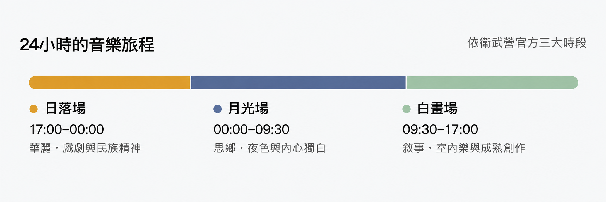
場館圖例：
音樂廳
表演廳
| 時間 | 場館 | 主要節目 | 演奏者／主講 |
|---|---|---|---|
| 時間 | 場館 | 主要節目 | 演奏者／主講 |
| 2月20日｜日落場 | |||
| 2/20 17:00–18:00 | 音樂廳 |
管絃樂1：Op.22、協奏曲 Op.11 | 林瑋祺 |
| 2/20 18:20–19:20 | 表演廳 |
奏鳴曲 Op.35、Op.58 | 橫山幸雄 |
| 2/20 18:30–19:00 | 音樂廳 |
講座1：技巧與蕭邦 | 焦元溥 |
| 2/20 19:40–20:30 | 音樂廳 |
管絃樂2：Op.13、Op.14、Op.2 | 林品宏 |
| 2/20 20:50–21:45 | 表演廳 |
圓舞曲選集 | 汪奕聞 |
| 2/20 21:15–21:45 | 音樂廳 |
講座2：蕭邦的叛逆與創意 | 焦元溥 |
| 2/20 22:05–23:10 | 音樂廳 |
波蘭舞曲選集 | 胡瀞云 |
| 2/20 23:30–00:10 | 表演廳 |
四首詼諧曲 | 盧易之 |
| 2月21日｜月光場 | |||
| 2/21 00:30–01:30 | 音樂廳 |
午夜爵士 | 許郁瑛等 |
| 2/21 01:45–02:45 | 表演廳 |
馬厝卡 I | 盧易之 |
| 2/21 03:00–04:00 | 音樂廳 |
夜曲 I | 林佳鋐 |
| 2/21 04:15–05:15 | 表演廳 |
馬厝卡 II | 吳亞欣 |
| 2/21 05:30–06:30 | 音樂廳 |
夜曲 II | 陳世偉 |
| 2/21 06:45–07:45 | 表演廳 |
幻想曲與拉赫曼尼諾夫變奏曲 | 林冠廷 |
| 2/21 08:00–09:15 | 音樂廳 |
練習曲全集與三首新練習曲 | 葉孟儒 |
| 2月21日｜白晝場 | |||
| 2/21 09:35–10:25 | 表演廳 |
前奏曲選集 | 陳宜鍾 |
| 2/21 09:45–10:15 | 音樂廳 |
講座3：蕭邦與後世 | 焦元溥 |
| 2/21 10:45–11:25 | 音樂廳 |
四首敘事曲 | 橫山幸雄 |
| 2/21 11:45–13:00 | 表演廳 |
室內樂 Op.3、8、65 | 吳亞欣等 |
| 2/21 12:00–12:30 | 音樂廳 |
講座4：文學中的蕭邦 | 焦元溥 |
| 2/21 13:20–14:10 | 音樂廳 |
波蘭歌曲 | 林映旻、賴致融 |
| 2/21 14:30–15:40 | 表演廳 |
輪旋曲、即興曲、搖籃曲、船歌 | 黃俊瑜、陳芝羽 |
| 2/21 16:00–17:00 | 音樂廳 |
管絃樂3：協奏曲 Op.21 | 謝維庭 |
注意：時間重疊為兩廳同步演出，不是排版錯誤。2027年2月21日18:30的橫山幸雄PLUS加碼場不屬於上述24小時正場，需另行購票；詳見文末「衛武營『瘋迷24』歷屆活動回顧」的PLUS說明。
日落場｜2月20日17:00至午夜
水彩創作插圖：浪漫沙龍的黃昏意象（非歷史現場重建）
場館標記：
音樂廳
表演廳
節目總表見前章；本章依開演時間介紹日落場各節目。
2月20日 17:00–24:00。 日落場從青年蕭邦的協奏曲出發，經奏鳴曲、圓舞曲與波蘭舞曲，最後由四首詼諧曲進入深夜。外向的演奏光彩逐漸轉成富有心理張力的劇場。
17:00–18:00｜管絃樂系列1： 第一號鋼琴協奏曲與 Op. 22（音樂廳）
本次演出者： 鋼琴林瑋祺、指揮廖嘉弘、 國立臺灣交響樂團。
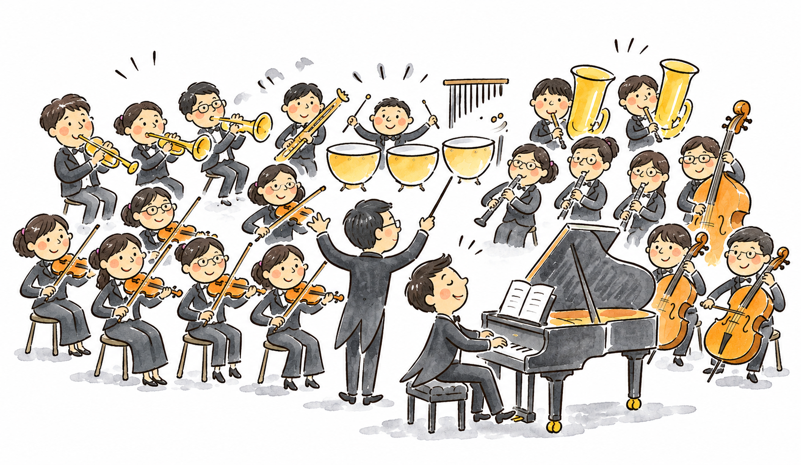
鋼琴獨奏家與管弦樂團， 呈現鋼琴協奏曲中獨奏與合奏相互呼應的特色。
曲種介紹｜鋼琴協奏曲
鋼琴協奏曲以獨奏鋼琴與管弦樂團的 交替、對答及合奏為主要特色。 古典時期以來，鋼琴協奏曲通常採用 快、慢、快三樂章的結構。 蕭邦的兩首鋼琴協奏曲均創作於青年時期， 以華麗的鋼琴技巧、歌唱性旋律 及富有詩意的音樂語言著稱。 管弦樂團則透過序奏、主題呈示 與和聲支持，建立作品的規模與戲劇性。
一、平靜的行板與華麗的大波蘭舞曲 Op. 22
《平靜的行板》（Andante spianato） 以柔和而流暢的旋律展開， 具有近似夜曲的歌唱性。 左手的連續伴奏營造出寧靜的背景， 讓右手旋律自由地呼吸與延伸。 隨後的《華麗的大波蘭舞曲》 （Grande polonaise brillante） 則轉向明亮而華麗的舞台。 鮮明的三拍子節奏、快速音階、 裝飾音與強烈的和弦， 展現波蘭舞曲的高貴氣質與炫技特色。 這兩個部分形成鮮明對比： 前者如同私密的鋼琴獨白， 後者則具有公開演出的輝煌氣勢。
影音｜ YouTube 延伸搜尋：蕭邦 Op. 22｜完整演奏
聆聽重點： 注意《平靜的行板》中， 右手旋律如何在規律伴奏之上自由延伸； 進入大波蘭舞曲後， 則留意三拍子重音與快速音型 如何建立華麗的舞蹈性格。
二、e小調第一號鋼琴協奏曲 Op. 11
蕭邦的第一號鋼琴協奏曲完成於1830年。 雖然編為第一號， 實際上完成時間晚於第二號協奏曲。 全曲包含三個樂章， 展現青年蕭邦對鋼琴技巧、 歌唱旋律與大型曲式的掌握。
第一樂章：Allegro maestoso （莊嚴的快板）
管弦樂團首先以長篇序奏呈示主要音樂材料， 隨後鋼琴以華麗而充滿個性的姿態登場。 快速音階、琶音與歌唱性旋律交替出現， 使獨奏鋼琴既能展現技巧， 又能與管弦樂團形成戲劇性的對話。
第二樂章：Romanze: Larghetto （浪漫曲：稍廣板）
這是全曲最富詩意的樂章。 鋼琴旋律受到義大利美聲唱法 （bel canto）的影響， 具有悠長的樂句、細緻的裝飾音 與自然的呼吸感。
樂團提供柔和的和聲背景， 讓鋼琴旋律如歌者般自由地延伸， 形成溫柔而親密的音樂世界。
第三樂章：Rondo: Vivace （輪旋曲：活潑的快板）
終樂章充滿波蘭克拉科維亞克舞曲 （Krakowiak）的節奏活力。 明朗的主題反覆返回， 穿插快速音型與華麗的鋼琴技巧， 最後以充滿光彩的氣勢結束全曲。
影音｜ YouTube 延伸搜尋：第一號鋼琴協奏曲 Op. 11｜完整演奏
聆聽重點：
第一樂章： 注意管弦樂團的長篇序奏， 以及鋼琴第一次登場時的音響效果。 比較獨奏與樂團如何交替呈現主題。
第二樂章： 聆聽鋼琴如何模仿歌者的呼吸， 尤其注意旋律句尾的裝飾音 與細緻的速度伸縮。
第三樂章： 辨識波蘭舞蹈節奏的律動， 並感受快速音型如何為終曲 帶來輕盈、活潑而華麗的性格。
版本比較： 比較不同鋼琴家對第二樂章的詮釋。 有些演奏強調旋律的自由與浪漫， 有些則維持較穩定的速度。 注意演奏者如何在速度伸縮與 整體音樂流動之間取得平衡。
18:20–19:20｜奏鳴曲集錦（表演廳）
本次演出者：橫山幸雄
橫山幸雄於1990年蕭邦國際鋼琴大賽 獲得第三名及奏鳴曲獎。 1991年，他為Sony錄製了蕭邦 第二號與第三號鋼琴奏鳴曲。 本場演出因此也是重新認識 他對蕭邦大型鋼琴作品詮釋的機會。
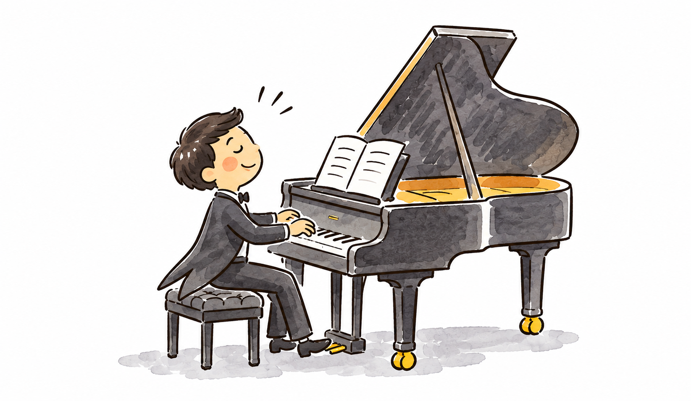
鋼琴獨奏： 呈現蕭邦鋼琴奏鳴曲的 獨白性、戲劇性與結構張力。
曲種介紹｜奏鳴曲
奏鳴曲（sonata）是由數個樂章構成的 大型器樂作品， 與「奏鳴曲式」（sonata form） 並不完全相同。 傳統的第一樂章常以 呈示、發展與再現組織主題， 整首奏鳴曲則可以包含 慢樂章、詼諧曲與終曲。 蕭邦的第二號與第三號鋼琴奏鳴曲 均採用四樂章架構， 卻透過強烈的情緒對比、 豐富的和聲色彩與複雜的聲部寫作， 拓展了浪漫時期鋼琴奏鳴曲的表現範圍。 兩首作品分別展現蕭邦 對悲劇性衝突與大型音樂結構的不同處理。
一、降b小調第二號鋼琴奏鳴曲 Op. 35《葬禮進行曲》
這首奏鳴曲完成於1839年， 其中最著名的是第三樂章《葬禮進行曲》。 然而，若只聆聽這個樂章， 便容易忽略整首作品所形成的 悲劇性結構與情緒連續性。
第一樂章：Grave – Doppio movimento
作品以莊嚴而緊張的引子開始， 隨後進入快速而不安的主題。 激烈的動力與歌唱性旋律形成對比， 使音樂不斷在衝突與抒情之間轉換。
第二樂章：Scherzo
詼諧曲節奏強烈， 具有近乎追逐般的動力。 中段則轉為柔和而富有歌唱性的旋律， 使前後形成鮮明的戲劇性對比。
第三樂章：Marche funèbre
著名的《葬禮進行曲》 以規律而沉重的節奏展開， 呈現莊嚴、悲傷而具有儀式感的氣氛。 然而中段突然轉為溫柔而平靜的旋律， 彷彿在悲傷之中出現短暫的安慰。 當葬禮進行曲再次返回時， 這段安慰反而使悲劇感更加深刻。
第四樂章：Finale: Presto
終樂章極為短促而神秘。 雙手以快速的單聲部八度齊奏音型 形成持續流動的音響， 缺少傳統終曲明確而輝煌的主題性格。 這種近乎沒有停歇的快速音流， 使作品在奇異而不安的氣氛中結束。
影音｜ 橫山幸雄｜第二號鋼琴奏鳴曲 Op. 35 （Sony 1991錄音）
影音｜ YouTube 延伸搜尋： 橫山幸雄｜第二號奏鳴曲 Op. 35 （YouTube演奏搜尋）
作品分析： 聆聽第一樂章時， 注意激烈的主題如何建立不安的氣氛， 以及抒情旋律如何提供短暫的平衡。 第三樂章最值得比較的是 外段莊嚴的葬禮節奏， 與中段溫柔旋律之間的對照。 最後注意第四樂章： 蕭邦沒有以華麗的終曲收束全曲， 反而以快速而模糊的音響， 留下近乎空無的餘韻。
二、b小調第三號鋼琴奏鳴曲 Op. 58
第三號奏鳴曲創作於1844年， 展現蕭邦成熟期對大型曲式、 歌唱性旋律與複音織度的掌握。 與第二號奏鳴曲強烈的悲劇性相比， 第三號具有更寬廣的音樂空間， 四個樂章之間也形成較完整的 抒情與戲劇發展弧線。
第一樂章：Allegro maestoso
第一樂章規模宏大， 以充滿動力的主題開始， 隨後出現寬廣而富有歌唱性的旋律。 不同主題透過和聲變化、 聲部交織與動機發展， 形成豐富而有層次的音樂結構。
第二樂章：Scherzo: Molto vivace
這是一個輕巧而敏捷的詼諧曲。 快速流動的音型， 與中段較為平靜的旋律形成對比。 其篇幅雖然短小， 卻在整首奏鳴曲中 扮演轉換情緒與調整速度的重要角色。
第三樂章：Largo
第三樂章具有夜曲般的抒情氣質。 悠長的旋律在細膩的和聲背景中展開， 使鋼琴呈現近似人聲的自然呼吸。 這個樂章並非單純的平靜， 其和聲與聲部變化， 使音樂在寧靜中仍保有深刻的情感張力。
第四樂章：Finale: Presto non tanto
終樂章具有持續向前推進的力量。 主要主題反覆返回， 並在快速音型與逐漸增強的張力中， 形成輝煌而有力的結尾。 與第二號奏鳴曲神秘而短促的終曲相比， 第三號以更鮮明的動力 完成整首作品的結構。
影音｜ 橫山幸雄｜第三號鋼琴奏鳴曲 Op. 58 （Sony 1991錄音）
影音｜ YouTube 延伸搜尋： 橫山幸雄｜第三號奏鳴曲 Op. 58 （YouTube演奏搜尋）
作品分析： 聆聽第一樂章時， 注意開頭主題的推進性， 以及其後歌唱性旋律如何 擴張音樂的表現空間。 第三樂章尤其值得細聽： 旋律具有悠長而自然的呼吸， 和聲則在寧靜的表面下持續變化。 終樂章重新聚焦音樂能量， 以連續的節奏推進， 形成與第二號奏鳴曲截然不同的結尾。
版本比較： 比較兩首奏鳴曲時， 不要只注意《葬禮進行曲》 或第三號奏鳴曲的優美緩板， 更應關注四個樂章之間的速度比例、 情緒銜接與整體結構。 第二號奏鳴曲的戲劇力量， 來自激烈衝突、葬禮行進 與神秘終曲之間的對照。 第三號奏鳴曲則透過宏大的第一樂章、 輕盈的詼諧曲、 深情的緩板與富有動力的終曲， 建立完整而寬廣的音樂弧線。 比較橫山幸雄的錄音與其他演奏家時， 可特別注意他如何安排慢樂章的呼吸、 快速樂章的速度， 以及整首作品的戲劇性比例。
18:30–19:00｜ 重新發現鋼琴的天才： 蕭邦與鋼琴演奏技巧（音樂廳）
主講：焦元溥
焦元溥為音樂評論家、作家及研究者， 取得倫敦國王學院音樂學博士學位， 曾任大英圖書館愛迪生研究員。 長期從事古典音樂研究、鋼琴家訪談、 音樂評論及音樂推廣， 尤其關注鋼琴演奏藝術與作品詮釋。
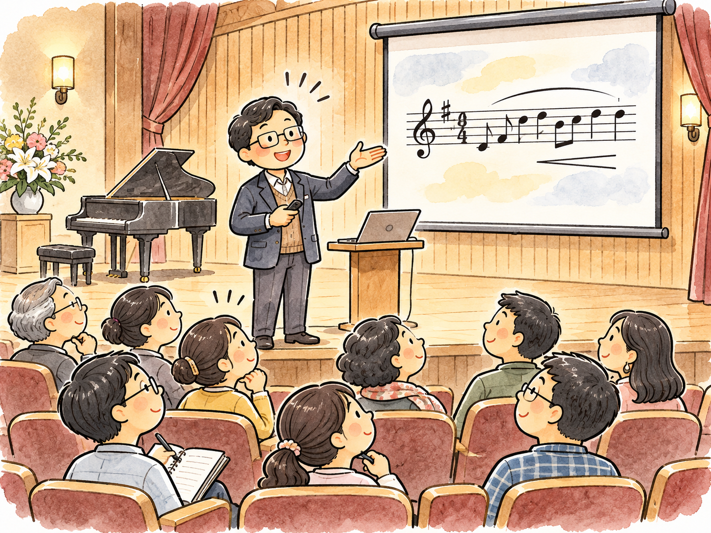
插圖：音樂導聆講座， 主講人與聽眾交流的情境。
相關著作與延伸閱讀
一、《聽見蕭邦》
本書從蕭邦的生平、鋼琴發展、 演奏技巧與音樂美學出發， 介紹其創作特色及主要作品。 其中「蕭邦的鋼琴演奏技巧系統」 與本場講座主題尤其相關。
二、《遊藝黑白：世界鋼琴家訪問錄》
透過對世界各地鋼琴家的深入訪談， 呈現不同演奏者對技巧、音樂教育、 作品詮釋與藝術理念的看法， 有助於理解同一首作品 為何會產生不同的演奏風格。
三、《樂之本事》
從古典音樂作品、演奏藝術 與音樂文化等角度展開討論， 適合作為一般聽眾 延伸認識古典音樂的閱讀材料。
影音｜ YouTube 延伸搜尋：焦元溥｜古典音樂講座與訪談
時間提示： 本講座與18:20表演廳 橫山幸雄的鋼琴奏鳴曲演出重疊。
19:40–20:30｜管絃樂系列2： 鋼琴與樂團的早期作品（音樂廳）
本次演出者： 鋼琴林品宏、指揮廖嘉弘、 國立臺灣交響樂團。
鋼琴家介紹｜林品宏
林品宏出生於臺灣南投竹山， 五歲開始學習鋼琴， 畢業於國立臺灣師範大學音樂學系， 曾師事辛幸純教授， 赴美後於印第安納大學 雅各布斯音樂學院深造， 師事鋼琴家 Norman Krieger。 近年他在多項國際鋼琴比賽中嶄露頭角。 2022年獲美國費城國際鋼琴大賽第二名； 2025年先後獲得西班牙 Maria Canals 國際鋼琴大賽第三名， 以及波蘭 Paderewski 國際鋼琴大賽第三名， 並獲最佳古典奏鳴曲演奏獎。 2026年獲選奇美藝術獎鋼琴組得主。 他曾與英國皇家愛樂、 波蘭波美拉尼亞愛樂、 臺北市立交響樂團及 國立臺灣交響樂團等合作演出協奏曲。
曲種介紹｜變奏曲與輪旋曲。變奏曲（variations）從既定主題出發，藉節奏、和聲、音域、織度或調性改寫材料，使同一旋律呈現不同性格。輪旋曲（rondo）則以主要主題多次返回、穿插對比段落為典型原則；常以ABACA等字母描述，但實際作品可更加自由。蕭邦早期的輪旋曲結合舞蹈節奏、華麗鋼琴技巧及管絃樂色彩，與Op. 2的主題變奏形成不同的結構趣味。
來源：公開典藏的蕭邦原作樂譜。
Op. 13《波蘭民謠幻想曲》、Op. 14《克拉科維亞克舞曲風格輪旋曲》，以及以莫札特《唐．喬萬尼》二重唱旋律為主題的 Op. 2 變奏曲，顯示蕭邦早年熟悉歌劇、即興與炫技傳統。Op. 2讓一段耳熟能詳的旋律不斷改換節奏、力度、觸鍵及性格。
變奏曲與波蘭民族素材。
Op. 2取材自莫札特《唐．喬萬尼》的二重唱〈Là ci darem la mano〉。先把主題當成可辨識的旋律，再聽每一次變奏如何改變其表情：有時強調歌唱，有時轉為敏捷音階，有時透過節奏與音域擴張成舞台性格。Op. 13的波蘭旋律與Op. 14的克拉科維亞克舞曲，則把民族素材與協奏型鋼琴寫作結合。
作品分析：各次主題再現透過節奏、和聲、音域及力度取得不同表情。
音樂細節：比較每次變奏的拍感、音域、裝飾與情緒；也注意鋼琴與樂團如何互相回應。
影音｜ YouTube 延伸搜尋：蕭邦 Op.2 唐喬萬尼主題變奏曲
20:50–21:45｜圓舞曲選集（表演廳）
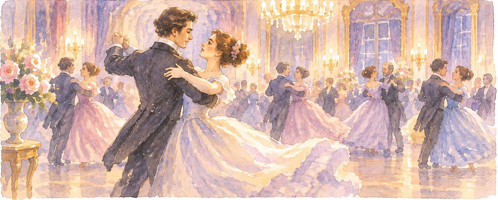
本次演出者：汪奕聞（Evan Wong）
鋼琴家介紹
汪奕聞為臺灣鋼琴家， 曾獲第六屆日本仙台國際音樂大賽 銀獎及觀眾獎， 並於2013年獲得奇美藝術獎。 他畢業於美國新英格蘭音樂學院、 茱莉亞音樂學院， 取得美國西北大學音樂藝術博士學位， 以及德國漢諾威音樂戲劇學院 最高演奏家文憑（Konzertexamen）。 汪奕聞曾參與瑞士韋爾比耶、 琉森及美國拉維尼亞等國際音樂節， 並與仙台愛樂、國立臺灣交響樂團 等樂團合作演出。 2020年，他由德國Acousence唱片公司 發行首張專輯 《Beethoven, Chopin & Others》， 展現其對古典與浪漫時期鋼琴作品的詮釋。 目前任教於國立臺北藝術大學。
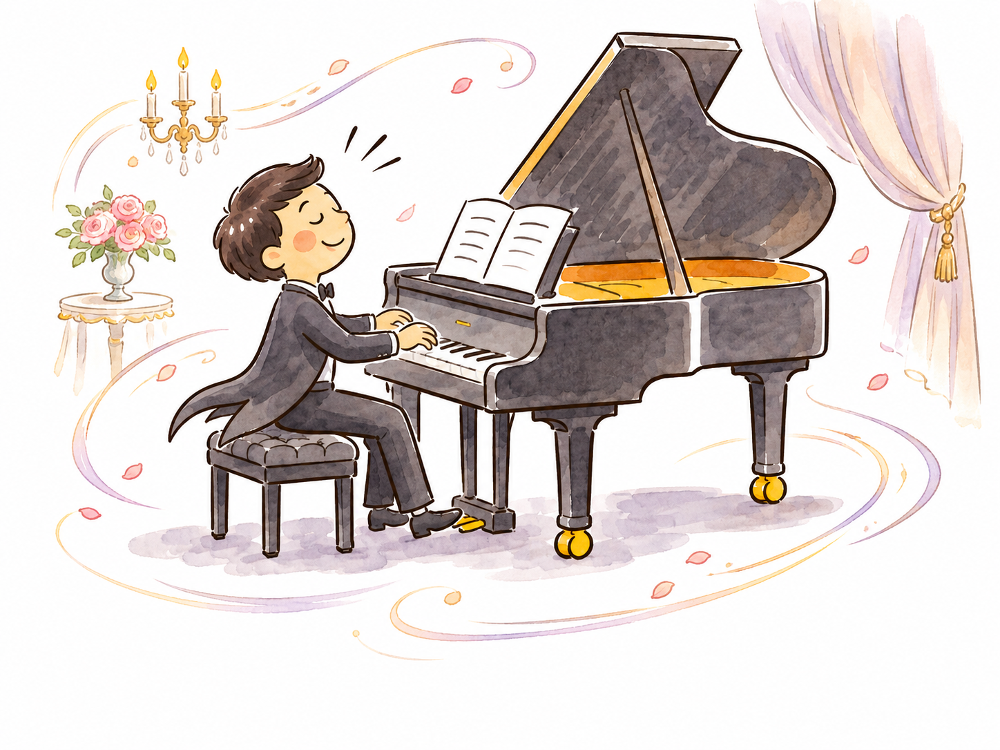
鋼琴獨奏與華麗圓舞曲氛圍， 呼應蕭邦圓舞曲優雅、流動而帶有舞蹈感的性格。
曲種介紹｜圓舞曲
圓舞曲（Waltz）源自歐洲社交舞蹈， 以三拍子與第一拍較強的低音為主要特徵。 典型的左手伴奏呈現 「低音、和弦、和弦」的規律節奏。 蕭邦保留圓舞曲的舞蹈骨架， 卻融入富有歌唱性的旋律、 精緻和聲及速度伸縮（rubato）， 使作品超越實際舞蹈伴奏， 成為具有獨立藝術價值的鋼琴小品。
來源：公開典藏的蕭邦原作樂譜。
一、降E大調華麗的大圓舞曲 Op. 18
這首作品明亮而華麗， 具有十九世紀沙龍舞會的優雅氣息。 流暢的旋律、快速音型 與鮮明的段落對比， 展現青年蕭邦的演奏技巧與舞蹈想像。
影音｜ YouTube 延伸搜尋：蕭邦華麗的大圓舞曲 Op. 18
二、3 首圓舞曲 Op. 34
這組作品展現不同的圓舞曲性格： 既有明朗而華麗的舞蹈氣氛， 也有較為內斂、抒情的情感表達。 三首作品之間的對比， 使聽眾能感受到蕭邦如何在相同曲種中， 創造不同的速度、音色與和聲世界。
影音｜ YouTube 延伸搜尋：蕭邦三首圓舞曲 Op. 34
三、降A大調圓舞曲 Op. 42
這首作品的節奏層次尤其值得注意。 右手旋律與左手伴奏 呈現不同的節奏分組感， 使音樂在三拍子的基礎上， 產生更加複雜的流動效果。
四、3 首圓舞曲 Op. 64
Op. 64包含三首性格鮮明的圓舞曲。
第一首降D大調 Op. 64 No. 1 以輕巧而快速的旋轉音型著稱；
第二首升c小調 Op. 64 No. 2 則在憂鬱的旋律、 流動的舞步與較明朗的段落之間轉換；
第三首降A大調 Op. 64 No. 3 展現更加細膩而優雅的音樂性格。
影音｜ YouTube 延伸搜尋：Rubinstein｜升c小調圓舞曲 Op. 64 No. 2
五、兩首圓舞曲 Op. 69
這兩首身後出版的圓舞曲， 相較於華麗的音樂會作品， 呈現較為親密、抒情的性格。
其中降A大調 Op. 69 No. 1 常以《離別圓舞曲》之名為人熟知， 具有柔和而感傷的旋律氣質。
影音｜ YouTube 延伸搜尋：蕭邦兩首圓舞曲 Op. 69
六、三首圓舞曲 Op. 70
這三首作品同樣於蕭邦逝世後出版， 展現不同時期的舞曲寫作風格。 其中既有明朗輕快的音樂， 也有較為沉靜而富於歌唱性的段落。
影音｜ YouTube 延伸搜尋：蕭邦三首圓舞曲 Op. 70
作品分析： 聆聽圓舞曲時， 可以先掌握左手穩定的三拍子： 第一拍是低音， 第二、第三拍通常由和弦支撐。 接著留意右手旋律， 如何透過裝飾音、句尾延長 與速度伸縮， 在規律舞步之上形成自由的呼吸。
特別值得比較 Op. 18 的華麗、 Op. 64 No. 2 的感傷， 以及 Op. 69 No. 1 的親密抒情。
版本比較： 不同鋼琴家的圓舞曲詮釋， 不應只以速度快慢判斷。 有些演奏強調舞蹈的輕盈與節奏感， 有些則突出旋律的歌唱性與和聲色彩。 比較汪奕聞的現場演出 與其他鋼琴家的錄音時， 可以特別注意左手伴奏的穩定性、 右手旋律的呼吸， 以及兩者如何形成自然的速度伸縮。
21:15–21:45｜講座：蕭邦的叛逆與創意（音樂廳）
主講：焦元溥
插圖：音樂導聆講座， 主講人與聽眾交流的情境。
講座主題｜蕭邦的叛逆與創意
蕭邦的創新並非完全拋棄既有的音樂形式， 而是在傳統的基礎上， 賦予鋼琴作品新的表現方式。 例如，他將原本用於社交舞蹈的圓舞曲， 轉化為具有歌唱性與豐富和聲的藝術小品； 將波蘭舞曲從莊嚴的宮廷舞蹈， 發展為充滿戲劇張力與民族精神的大型作品； 又將原本帶有幽默意味的詼諧曲， 改寫成情緒強烈、對比鮮明的獨立鋼琴作品。 這些作品呈現蕭邦如何在延續傳統的同時， 重新探索鋼琴的音色、技巧與曲式可能性。
延伸閱讀
焦元溥的《聽見蕭邦》 從蕭邦的音樂美學、演奏技巧與作品類型出發， 提供理解其創作特色的參考。 以下資料供講座前後延伸閱讀， 並非本場講座的正式內容大綱。
影音｜ YouTube 延伸搜尋：焦元溥｜蕭邦相關講座與訪談
時間提示： 本講座與20:50表演廳 汪奕聞的圓舞曲選集部分重疊。
22:05–23:10｜波蘭舞曲選集（音樂廳）
本次演出者：胡瀞云
鋼琴家介紹
胡瀞云為活躍於國際樂壇的臺灣鋼琴家， 曾獲美國紐約演奏藝術家協會 國際大賽鋼琴首獎， 以及以色列魯賓斯坦國際鋼琴大賽獎項 與觀眾人氣獎。 她年少時即以蕭邦作品受到矚目， 十七歲便受邀於波蘭具代表性的 蕭邦國際音樂節演出全蕭邦獨奏會。 她的專輯《看見蕭邦 X 胡瀞云》 曾獲第23屆金曲獎 最佳古典音樂專輯獎。 她也曾參加2010年華沙蕭邦國際鋼琴大賽， 留下珍貴的蕭邦演奏影音紀錄。
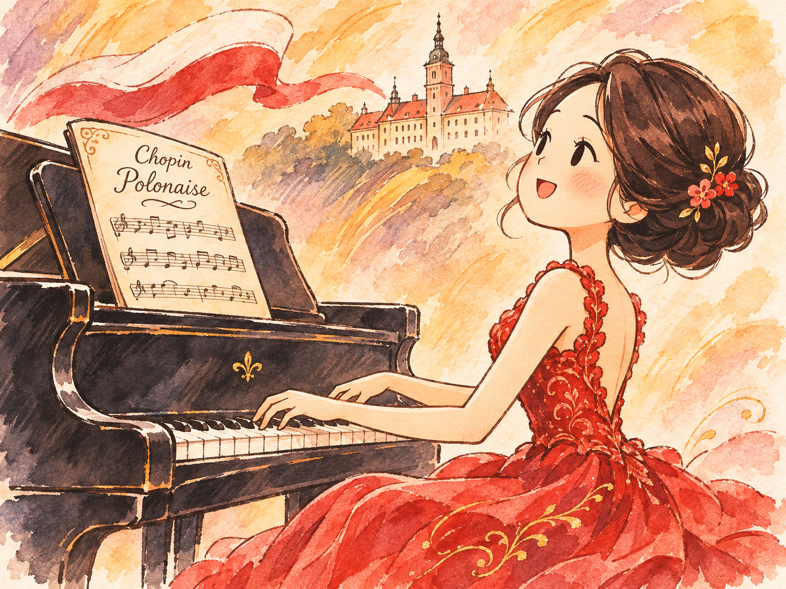
鋼琴家與波蘭舞曲意象， 呈現華麗、莊嚴而富有戲劇性的音樂性格。
曲種介紹｜波蘭舞曲
波蘭舞曲（Polonaise） 源自波蘭貴族與宮廷舞蹈傳統， 是一種具有莊重行進感的三拍子舞曲。 其特色包括鮮明的附點節奏、 穩健的步伐與儀式性的音樂姿態。 蕭邦保留波蘭舞曲的節奏特徵， 卻將其擴展為篇幅宏大、 和聲複雜且富有戲劇性的鋼琴作品。 本場選曲涵蓋 Op. 26、Op. 40、 Op. 44、Op. 53 及 Op. 61， 呈現蕭邦不同創作時期 對波蘭舞曲的想像與發展。
一、兩首波蘭舞曲 Op. 26
這兩首作品分別展現 陰鬱而激烈的情緒， 以及較為莊嚴、明朗的舞蹈性格。 蕭邦在傳統波蘭舞曲的節奏基礎上， 逐漸加入更豐富的和聲與戲劇性對比， 使舞曲成為具有獨立表現力的音樂作品。
影音｜ YouTube 延伸搜尋：蕭邦兩首波蘭舞曲 Op. 26
二、兩首波蘭舞曲 Op. 40
A大調 Op. 40 No. 1 常被稱為《軍隊波蘭舞曲》， 以明亮、堅定的和弦及莊嚴節奏著稱。
c小調 Op. 40 No. 2 則具有較為陰沉的性格， 與第一首形成強烈對比。
這組作品顯示蕭邦如何在相同的 三拍子舞曲形式中， 創造截然不同的情緒世界。
影音｜ YouTube 延伸搜尋：《軍隊》波蘭舞曲 Op. 40 No. 1
三、升f小調波蘭舞曲 Op. 44
這首作品以激烈而沉重的音樂展開， 具有強烈的戲劇張力。
中間穿插馬厝卡性格的段落， 使兩種波蘭民族舞蹈語彙 在同一首作品中相互交織。
影音｜ YouTube 延伸搜尋：蕭邦波蘭舞曲 Op. 44｜經典演奏
四、降A大調波蘭舞曲 Op. 53《英雄》
《英雄》波蘭舞曲以強烈的和弦、 鮮明的附點節奏及輝煌的音響著稱。
中段持續的左手八度音型， 形成近乎奔馳般的推進力量， 是全曲最具辨識度的段落之一。
這首作品也特別適合比較 不同鋼琴家如何處理節奏、 速度、力度與整體氣勢。
來源：公開典藏的蕭邦原作樂譜。
演奏版本比較｜ 《英雄》波蘭舞曲 Op. 53
影音｜ YouTube 延伸搜尋： 胡瀞云｜《英雄》Op. 53 （2010年華沙蕭邦大賽）
影音｜ Vladimir Horowitz｜《英雄》Op. 53 （1987年維也納演奏）
影音｜ Arthur Rubinstein｜《英雄》Op. 53 （歷史演奏）
影音說明： 以上為歷史演奏的參考入口， 部分影片可能受到地區、 版權或平台播放條件限制。 如無法播放，可利用下方搜尋連結 尋找其他上架版本。
影音｜ YouTube 延伸搜尋： Horowitz、Rubinstein｜ 《英雄》波蘭舞曲其他版本
作品分析： 聆聽不同鋼琴家的演奏時， 可先比較開頭和弦的重量 與波蘭舞曲的節奏感。
接著注意中段連續的左手八度： 演奏者如何控制速度、 力度與聲音的清晰度？
最後比較高潮與結尾的安排， 感受不同詮釋如何塑造 莊嚴、輝煌與英雄性的音樂形象。
五、降A大調《幻想波蘭舞曲》 Op. 61
《幻想波蘭舞曲》是蕭邦晚期 最重要的大型鋼琴作品之一。 與《英雄》鮮明而直接的節奏不同， 這首作品以自由的引子展開， 波蘭舞曲的節奏並非始終清楚可辨， 而是在不同段落中逐漸浮現。 作品透過複雜和聲、 主題變形與沉思性的段落， 使音樂超越傳統舞蹈形式， 呈現更加內省而富有詩意的精神世界。
延伸聆聽
影音｜ Maurizio Pollini｜ 《幻想波蘭舞曲》Op. 61
影音｜ YouTube 延伸搜尋： Krystian Zimerman｜ 《幻想波蘭舞曲》Op. 61
作品分析： 聆聽 Op. 61 時， 先注意作品如何由自由的引子 逐漸形成較明確的節奏方向。 再觀察波蘭舞曲節奏如何時而浮現、 時而消散， 以及和聲變化如何帶動音樂 在回憶、沉思與前進之間轉換。
版本比較： 比較《英雄》Op. 53 與《幻想波蘭舞曲》Op. 61， 可以看見蕭邦波蘭舞曲寫作的兩種面貌。 《英雄》具有鮮明而外向的力量， 節奏與音響帶有公開宣示般的氣勢。 《幻想波蘭舞曲》則更加自由、內省， 透過和聲與主題變化 建立複雜而富有層次的音樂世界。 比較不同演奏家時， 除了速度與技巧， 也應注意音色、聲部平衡、 和聲方向及長段落的情緒安排。
音樂細節： 《英雄》與《幻想波蘭舞曲》並聽：
何者較像對外宣告？ 何者較像內在獨白？ 不同鋼琴家如何透過 速度、音色與節奏， 呈現同一作品的不同性格？
23:30–00:10｜四首詼諧曲（表演廳）
本次演出者：盧易之
鋼琴家介紹
盧易之為臺灣鋼琴家， 曾獲多項國際與區域鋼琴比賽獎項， 演出足跡遍及歐洲、亞洲與美洲。 他畢業於維也納音樂暨表演藝術大學， 並獲柏林藝術大學最高演奏家文憑， 目前亦從事教學、演奏與編曲工作。 他已灌錄多張鋼琴獨奏專輯， 其中《我的蕭邦；我的布拉姆斯》 曾獲金曲獎肯定。 2018年他以《詼諧曲》為題舉行鋼琴獨奏會， 公開演出蕭邦全部四首詼諧曲， 因此本場演出也可視為他對這組作品 長期累積後的再次呈現。
呼應蕭邦四首詼諧曲 既獨白又充滿戲劇張力的音樂性格。
曲種介紹｜詼諧曲。
詼諧曲（scherzo）原意與「玩笑」有關， 自貝多芬以來， 常作為奏鳴曲或交響曲中的快速樂章， 多半具有三拍子、 鮮明節奏及中段對比。 蕭邦則將詼諧曲發展為 獨立的大型鋼琴作品。 在他的筆下， 詼諧曲通常不再只是輕鬆幽默的音樂， 而是充滿突然的力度轉折、 密集的快速音型、 抒情中段與高度戲劇性的結尾。
盧易之本場演出四首詼諧曲 Op. 20、31、39、54。 四首作品既彼此呼應， 又各自展現鮮明而不同的個性。
四首詼諧曲的對比
第一號詼諧曲 Op. 20 以強烈、近乎質問的姿態開始， 緊張而不安； 中段卻引入帶有搖籃曲氣質的 波蘭聖誕頌歌旋律， 形成非常鮮明的對比。
第二號詼諧曲 Op. 31 以著名的弱奏問句開始， 隨後突然爆發出強烈回答， 是蕭邦最具戲劇性對比的作品之一。 它在柔美旋律與爆發性能量之間反覆往返， 極富舞台效果。
第三號詼諧曲 Op. 39 節奏尖銳、推進強烈， 同時帶有寬廣的和聲空間。 相較於第二號更重視問答式戲劇， 第三號更像持續累積力量的長弧線。
第四號詼諧曲 Op. 54 則展現不同於前三首的氣質。 它更流動、更明朗， 也更講究透明觸鍵與繁密聲部之間的平衡。 在四首之中， 第四號往往被視為最細膩、 也最難以單純用「爆發性」概括的一首。
盧易之演奏版本與延伸聆聽
影音｜ 盧易之｜第三號詼諧曲 Op. 39 （2018國家音樂廳現場）
影音｜ YouTube 延伸搜尋：盧易之｜蕭邦詼諧曲相關演奏搜尋
影音｜ YouTube 延伸搜尋：Adam Harasiewicz｜四首詼諧曲完整演奏
影音｜ YouTube 延伸搜尋：Maurizio Pollini｜蕭邦詼諧曲
作品分析： 依次聽四首作品的「第一分鐘」， 往往就能感受到不同的戲劇主角。 第一號較像突如其來的質問， 第二號像低聲發問與強烈回應， 第三號迅速建立推進張力， 第四號則較為流動、細緻而複雜。 接著再聽各首的抒情中段， 觀察它們如何回應開頭的衝突， 而不是單純成為「休息段落」。
版本比較： 比較不同演奏家時， 可特別注意第二號詼諧曲 開頭弱奏問句的處理方式： 極輕的觸鍵、 短暫的停頓、 以及其後強奏的爆發， 會形成截然不同的懸念效果。 第三號與第四號則很適合比較 演奏者如何掌握長段落的結構、 聲部層次與音色透明度。
音樂細節： 四首詼諧曲雖同屬一組作品， 但情緒世界並不相同。 可以試著比較： 哪一首最像戲劇性的衝突？ 哪一首最像內在獨白？ 哪一首最具有透明、流動而近乎晚期風格的氣息？
00:30–01:30｜午夜爵士（音樂廳）
本次演出者： 許郁瑛（爵士鋼琴與編曲）、 安東尼．斯普蘭格（爵士鋼琴）、 馬蒂斯．雷諾（低音提琴）、 托比亞斯．弗朗霍費爾（鼓）
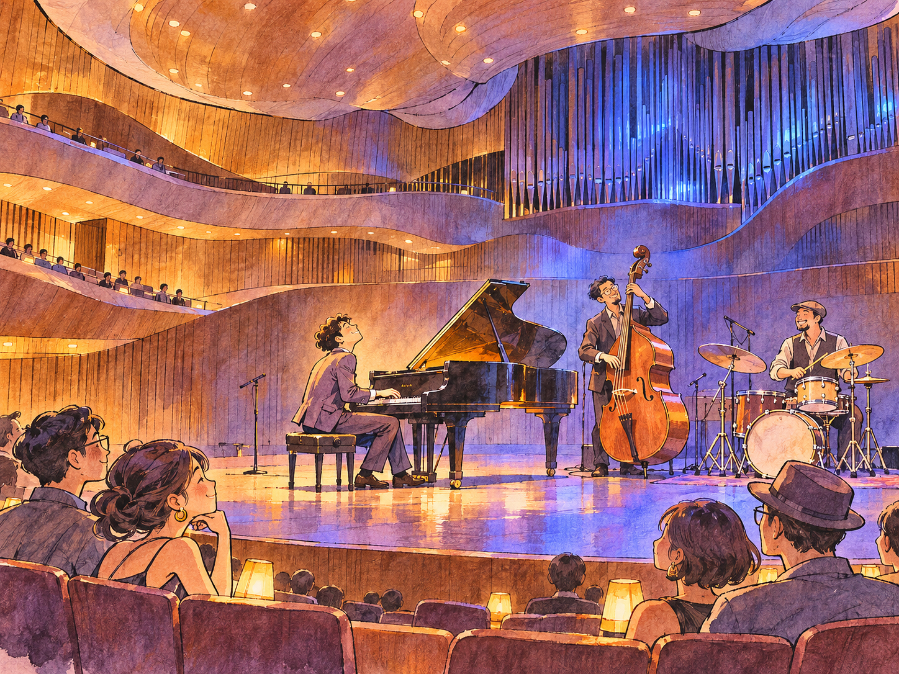
插圖：午夜音樂廳中的爵士現場， 以鋼琴三重奏／重奏的氛圍， 呼應蕭邦主題在夜色中的重新詮釋。
節目導聆｜蕭邦與爵士的相遇
爵士化的蕭邦， 並不是要宣稱蕭邦本來就是爵士樂作曲家， 而是讓我們重新聽見： 他的旋律線條、半音和聲、 節奏彈性與歌唱性句法， 如何在二十世紀以後 成為爵士改編與即興發展的豐富素材。
蕭邦作品本身就常具有鮮明旋律、 細膩和聲與自由呼吸般的速度處理， 因此在爵士語彙中， 它們往往能自然轉化為新的節奏脈動、 和聲延伸與即興空間。
爵士改編的三個層次
當爵士樂手改寫蕭邦時， 可以大致從三個層次來聆聽。
第一， 是旋律輪廓： 即使經過節奏變形或裝飾， 熟悉蕭邦的聽眾 往往仍能辨認出原曲主題。
第二， 是和聲語言： 改編者可能保留原本和聲骨架， 也可能加入更豐富的延伸和弦、 替代和聲與色彩性進行， 使原曲帶有新的光影與張力。
第三， 是節奏與即興： 原本較自由的夜曲、 圓舞曲或前奏曲主題， 進入爵士語境後， 可能被重新放入搖擺節奏、 切分節奏、拉丁律動， 或成為即興段落的基礎。
如何聆聽這場午夜爵士
這場演出最有趣的地方， 不只是「猜出原曲」， 而是觀察蕭邦的音樂材料 如何在不同語法中獲得新生命。 有些改編會保留清楚的旋律， 讓人一聽就認出蕭邦； 有些則可能只留下幾個動機、 和聲色彩或節奏影子， 把原作轉化成更自由的爵士敘事。 鋼琴與低音提琴、鼓組之間的互動， 也會使音樂從原本的獨奏想像， 轉變為更具對話性與即興性的現場語言。
作品分析： 先辨認最明顯的主題材料， 再聽改編是否只改變節奏表面， 或連和聲、拍點、段落安排 與即興空間都一起重組。
如果熟悉原曲， 也可以比較： 哪些地方仍保留蕭邦的氣息， 哪些地方則已明顯進入 爵士語法的世界。
音樂細節： 先辨識原旋律， 再注意和聲、節奏與即興 如何被重新改寫。 尤其可留意鋼琴與低音提琴、鼓組之間 如何形成新的對話關係。
01:45–02:45｜馬厝卡 I（表演廳）
本次演出者：盧易之。本場為馬厝卡第一組； 第二組由吳亞欣於04:15演出。
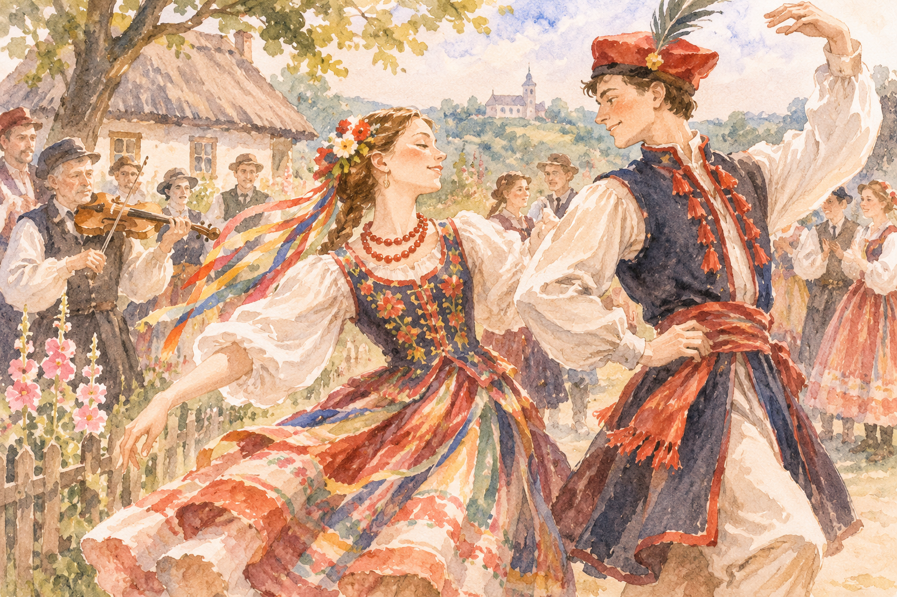
波蘭鄉村的馬厝卡舞蹈意象
曲種介紹｜馬厝卡。 馬厝卡（Mazurka）源於波蘭民間舞蹈傳統，是一類富有地方 特色的三拍子舞曲。與圓舞曲通常強調第一拍不同，馬厝卡常 突出第二拍或第三拍，並運用附點節奏、短暫停頓及靈活的 速度變化，形成獨特的舞步感。
蕭邦將波蘭民間舞蹈的節奏、調式與旋律語彙融入鋼琴創作， 使馬厝卡逐漸超越實際舞蹈的功能，成為具有個人情感與詩意 的藝術小品。早期作品仍保留明朗的鄉村氣息；晚期作品則 呈現更細膩的和聲、調式變化與內省性格。這些作品也與 蕭邦離開波蘭後持續保有的故鄉記憶密切相關。
來源：公開典藏的蕭邦原作樂譜。
馬厝卡的重音與節奏。
馬厝卡的三拍子並非均勻而固定的舞步。第二拍或第三拍的 重音、旋律的延宕，以及句末短暫停頓，賦予音樂富有彈性 的節奏性格。晚期馬厝卡的短小樂句中，還經常出現微妙的 轉調、半音和聲及民間調式的色彩。
作品分析：三拍子中重音位置的移動，以及旋律延宕與句末停頓 所形成的舞蹈感。
版本比較：與前夜20:50的圓舞曲相比，馬厝卡更鮮明地呈現 波蘭民間舞蹈的節奏語彙與地方色彩。
影音｜ Rubinstein 1938–39 馬厝卡錄音選集
03:00–04:00｜夜曲 I（音樂廳）
本次演出者：林佳鋐。本場包含蕭邦《三首夜曲》Op. 9、《兩首夜曲》Op. 27、《兩首夜曲》Op. 55、《兩首夜曲》Op. 62，以及升c小調《極大表現力的緩版》（又稱升c小調夜曲）WN 37。
水彩創作：夜色、鋼琴與蕭邦夜曲的抒情意象
演奏者資訊｜林佳鋐。 林佳鋐旅法多年，曾獲法國里昂國際鋼琴大賽銅牌、法國瑪耶國際鋼琴大賽第三獎及最佳潛力獎、法國夏圖鋼琴大賽首獎。現任國立臺北教育大學音樂學系助理教授，並持續活躍於獨奏、協奏曲及室內樂演出。其近年專輯包括《德布西24首前奏曲》與《拉摩組曲》。夜曲這類講究歌唱性、呼吸與音色層次的作品，也很適合從他的法國學派背景來理解。
曲種介紹｜夜曲。 夜曲（nocturne）在十九世紀成為以抒情旋律為中心的鋼琴曲種，愛爾蘭作曲家約翰．費爾德（John Field）是重要先驅。其典型寫法是歌唱性的高音旋律，搭配分解和弦伴奏。蕭邦吸收義大利歌劇美聲與即興裝飾的手法，並擴充夜曲的和聲、聲部與中段規模，因此作品既有寧靜的一面，也能呈現強烈的戲劇性。
來源：公開典藏的蕭邦原作樂譜。
蕭邦的夜曲在John Field的基礎上，發展出更細膩的裝飾音、更豐富的和聲，以及更鮮明的中段對比。柔美只是其中一面；有些夜曲會突然從私密低語轉成強烈的悲劇性宣洩。
夜曲的伴奏、裝飾與段落對比。
Op. 9 No. 2展示美聲式裝飾；Op. 27 No. 2則透過更長的旋律線條與更濃厚的和聲色彩，讓夜曲不只是沙龍小品，而能承擔更寬廣的戲劇性。左手分解和弦像時間流動的底座，右手旋律則在其上伸縮、呼吸，因此夜曲的自由並不是無節制的漂流，而是建立在穩定拍感上的彈性歌唱。
作品分析：可先從Op. 9 No. 2聽起：比較旋律每次返回時，裝飾音如何逐步增加；再聽Op. 27 No. 2，觀察旋律如何隨和聲轉折而延展，並在中段累積更強的張力。
版本比較：魯賓斯坦的版本適合用來聽清楚的呼吸、圓潤的連奏與不誇張的rubato；若與其他演奏家相比，可特別注意裝飾音究竟是服務語句，還是變成表面效果。
音樂細節：聽右手旋律的呼吸是否自然；裝飾音如何延長某個音的情緒；中段是否改變原先的氣氛。
影音｜ 指定錄音：Rubinstein 1965 夜曲全輯，Op. 9 No. 2 自05:25開始
影音｜ 對照聆聽：Op. 27 No. 2 自35:35開始
04:15–05:15｜馬厝卡 II（表演廳）
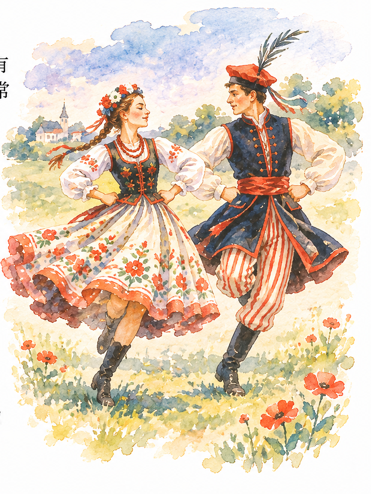
本次演出者：吳亞欣（Ya-Hsin Wu）
鋼琴家介紹
吳亞欣出生於高雄，畢業於國立臺灣師範大學 音樂系，赴美後取得琵琶第音樂院 （Peabody Institute）鋼琴演奏碩士， 以及馬里蘭大學音樂藝術博士學位。 曾師事 Brian Ganz 與 Santiago Rodriguez， 並接受 Leon Fleisher 等鋼琴家的大師班指導。 求學期間曾獲琵琶第音樂院 Rose Marie Milholland Award， 2006年獲法國楓丹白露音樂營全額獎學金， 2008年入圍美國 Iowa Piano Competition 決賽。 2011年於義大利帕多瓦國際音樂比賽 獲得獨奏獎項及室內樂組首獎。 返臺後，吳亞欣持續投入鋼琴獨奏、 協奏曲及室內樂演出， 曾與高雄市交響樂團合作， 亦長期參與南臺灣室內樂協會的音樂活動。 她與小提琴家薛志璋、大提琴家高炳坤 組成南台灣鋼琴三重奏， 並積極投入音樂教育及地方音樂推廣。 她亦於國立高雄師範大學等校教授鋼琴。
本場曲目與作品特色
本場是凌晨第二場馬厝卡舞曲演出， 延續01:45盧易之的曲集， 但兩場選曲並不相同。
吳亞欣演奏的曲目包括 Op. 17、Op. 41、Op. 56、Op. 63， 以及身後出版的 Op. 67 與 Op. 68 中的多首作品。 這些作品橫跨蕭邦不同創作階段， 呈現馬厝卡從鮮明舞蹈節奏， 逐漸發展出細膩和聲與複雜聲部的過程。 其中，Op. 17 No. 4 以帶有疑問感的和聲與內省氣氛著稱； Op. 56 的三首馬厝卡 展現成熟期更精緻的和聲與複音寫作； Op. 63 則是蕭邦晚期的重要作品， 在短小篇幅中凝聚豐富的情感與音樂層次。
作品分析： 比較兩場馬厝卡舞曲時， 可先注意三拍子重音的位置， 以及演奏者如何處理節奏的彈性。 接著聆聽 Op. 56 與 Op. 63 的和聲轉換、內聲部及句末停頓。 有些作品的旋律看似簡單， 卻因短暫的轉調或聲部變化， 產生難以預期的情緒轉折。 馬厝卡的演奏不只是重現舞蹈節奏， 更需要在規律的拍感與自由的速度伸縮之間， 建立自然的音樂呼吸。
延伸影音｜其他鋼琴家的演奏
一、Arthur Rubinstein｜ 馬厝卡 Op. 17 No. 4
魯賓斯坦的演奏可作為理解蕭邦馬厝卡 節奏、旋律呼吸與抒情性的重要參考。 聆聽時可以注意左手如何維持舞蹈的 基本脈動，而右手旋律則透過細微的 速度變化，呈現沉思而帶有懷舊感的氣氛。
影音｜ Arthur Rubinstein｜Mazurka Op. 17 No. 4
二、Daniil Trifonov｜ 馬厝卡 Op. 56 No. 3
特里福諾夫在2010年蕭邦國際鋼琴大賽 第二輪演奏的c小調馬厝卡， 提供另一種值得比較的詮釋。 這首作品具有複雜的和聲與聲部交織， 聆聽時可注意不同聲部的層次， 以及演奏者如何安排長段落的張力。
影音｜ Daniil Trifonov｜Mazurka Op. 56 No. 3 （2010年蕭邦大賽）
三、Arthur Rubinstein｜ 馬厝卡 Op. 63
Op. 63的三首馬厝卡是蕭邦晚期作品， 篇幅短小，卻包含細膩的節奏與和聲變化。 魯賓斯坦的歷史錄音提供了比較 不同作品之間性格與速度安排的機會。 以下連結由Op. 63 No. 1開始， 並可接續聆聽No. 2與No. 3。
影音｜ Arthur Rubinstein｜Mazurkas Op. 63 （歷史錄音）
05:30–06:30｜夜曲 II（音樂廳）
本次演出者：陳世偉（Shih-Wei Chen）
鋼琴家介紹
陳世偉為臺灣鋼琴家， 曾赴德國漢諾威音樂戲劇學院 （Hochschule für Musik, Theater und Medien Hannover）深造， 取得音樂教育與鋼琴演奏雙碩士學位， 並於2013年獲得該校最高獨奏家文憑 （Soloklassen）。 在德國求學期間， 曾師事 Matti Raekallio 與 Einar Steen-Nøkleberg 等鋼琴家。 2004年獲德國 Bruno-Frey Musikpreis， 2008年獲義大利 Mauro Paolo Monopoli 國際鋼琴大賽第二名， 2012年獲西班牙馬德里 Delia Steinberg 國際鋼琴大賽首獎。 陳世偉十九歲時即與亞洲 EMI 唱片公司 簽約，發行個人鋼琴獨奏專輯。 他的演奏活動涵蓋歐洲、美國與亞洲， 曾與國家交響樂團、 國立臺灣交響樂團、 臺北市立交響樂團及國外樂團 合作演出鋼琴協奏曲。 演奏曲目包括貝多芬、李斯特、 蕭邦、柴可夫斯基與普羅高菲夫等 作曲家的作品。 除了獨奏及協奏曲演出， 他也長期投入鋼琴教育， 任教於東海大學音樂學系。
本場曲目與作品特色
這是凌晨第二場夜曲演出， 延續03:00林佳鋐的第一組夜曲， 但選曲與作品風格各有不同。
陳世偉演奏的曲目包括 三首夜曲 Op. 15、 兩首夜曲 Op. 32、 兩首夜曲 Op. 37、 兩首夜曲 Op. 48， 以及身後出版的 e小調夜曲 Op. 72 No. 1。 這些作品呈現蕭邦如何將原本 以抒情旋律為中心的夜曲， 逐漸發展成具有複雜和聲、 豐富聲部及戲劇性對比的鋼琴作品。
一、三首夜曲 Op. 15
Op. 15 的三首作品具有不同性格。 第一首F大調夜曲， 從平靜的歌唱性旋律開始， 中段卻出現激烈的音樂衝突。 第二首升F大調夜曲， 以細緻的裝飾音與流動的旋律著稱， 右手的裝飾性音型 展現近似義大利美聲唱法的特質。 第三首g小調夜曲， 則具有更加內省的氣氛， 後段呈現近似聖詠的和聲語言。
二、兩首夜曲 Op. 32
Op. 32 No. 1 以柔和的旋律展開， 但結尾突然出現強烈的和聲與音響轉折， 使原本平靜的夜曲 產生近乎戲劇性宣敘調的效果。 Op. 32 No. 2 則透過不同段落的 節奏、調性及情緒對比， 呈現更加多變的抒情風格。
三、兩首夜曲 Op. 37
Op. 37 No. 1 的g小調夜曲 具有沉靜而略帶憂鬱的性格， 中段出現近似聖詠的和弦進行， 形成與外段不同的音響空間。 Op. 37 No. 2 的G大調夜曲， 則以流動而富有裝飾性的旋律， 展現輕盈、細膩的音色變化。
四、兩首夜曲 Op. 48
Op. 48 No. 1 是本場最值得 仔細聆聽的作品之一。 這首c小調夜曲 不只依靠細膩的裝飾音， 更透過莊嚴的和弦、 逐漸擴大的音響， 以及主題返回後增厚的織體， 展現夜曲所能達到的戲劇尺度。 作品開始於沉重而內省的旋律， 中段轉入近似聖詠的和弦寫作， 隨後音樂逐漸累積張力。 當開頭主題再次出現， 原本的平靜已轉化為 更強烈而複雜的情感表達。 Op. 48 No. 2 的升f小調夜曲 則以持續流動的伴奏、 歌唱性旋律與不同段落間的對比， 展現另一種富有情緒張力的夜曲風格。
五、e小調夜曲 Op. 72 No. 1
這首作品創作於蕭邦青年時期， 在作曲家逝世後才出版。 與Op. 48的戲劇性相比， Op. 72 No. 1 具有更加直接而親密的 抒情性格。 左手規律流動的分解和弦， 支撐右手帶有憂鬱氣息的旋律， 呈現早期夜曲的歌唱性特徵。
作品分析： 欣賞本場夜曲時， 可以從三個方向進行比較。 首先，注意旋律與伴奏的關係。 右手旋律如何在左手規律的分解和弦之上， 形成自然的呼吸與速度伸縮？ 其次，留意和聲如何改變音樂情緒。 某些作品只透過短暫的轉調、 半音變化或聲部移動， 便能使原本平靜的旋律 產生不安或期待。 最後，特別聆聽 Op. 48 No. 1。 從慢速而莊嚴的主題開始， 追蹤中段和弦、音量與織體 如何逐漸累積張力， 並比較主題返回時 與最初呈現的不同。 與03:00第一組夜曲相比， 可以留意蕭邦如何從旋律的歌唱性， 進一步發展出具有交響性規模的 和聲張力與戲劇高潮。
延伸影音｜其他鋼琴家的演奏
一、Arthur Rubinstein｜ 夜曲 Op. 48 No. 1
魯賓斯坦的演奏提供理解 這首夜曲整體結構的重要參考。 他對旋律呼吸、和聲層次 及高潮安排的處理， 值得在音樂會前仔細聆聽。 特別注意中段的和弦如何逐漸增強， 以及主題返回時， 如何從原本的內省 轉變成更強烈的情緒表達。
影音｜ Arthur Rubinstein｜Nocturne Op. 48 No. 1 （65:27）
二、Maria João Pires｜ 夜曲 Op. 48 No. 1
葡萄牙鋼琴家皮耶絲的錄音 可與魯賓斯坦的版本比較。 聆聽時可特別注意 旋律的歌唱性、句尾停頓、 細微的速度伸縮， 以及音色與和聲之間的關係。 兩位鋼琴家演奏同一首作品， 卻可能透過不同的速度比例、 聲部平衡與音響安排， 呈現不同的情緒發展。
參考錄音｜ Maria João Pires：Chopin Nocturnes
三、Arthur Rubinstein｜ 夜曲 Op. 15 No. 2
與 Op. 48 No. 1 的戲劇張力相比， 升F大調夜曲 Op. 15 No. 2 更適合觀察蕭邦的裝飾性旋律。 聆聽右手細緻的裝飾音， 以及左手如何提供穩定的和聲背景， 使旋律具有自由而自然的呼吸。
影音｜ Arthur Rubinstein｜Nocturne Op. 15 No. 2
版本比較： 比較魯賓斯坦與皮耶絲 對 Op. 48 No. 1 的詮釋時， 可以注意兩位演奏者 如何安排中段和弦的重量、 旋律線條的呼吸、 高潮的形成與釋放。 同時將 Op. 15 No. 2 與 Op. 48 No. 1 並聽， 也能理解蕭邦夜曲如何 從裝飾性與歌唱性出發， 逐漸發展為具有大型戲劇結構的作品。
06:45–07:45｜幻想曲與變奏曲（表演廳）
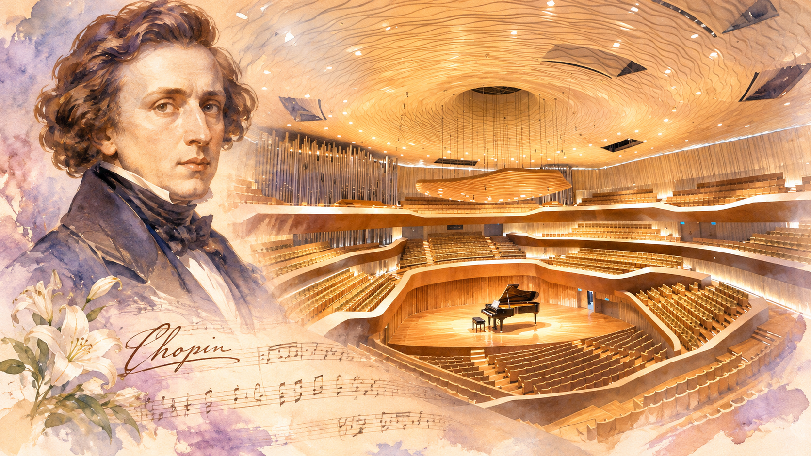
本次演出者：林冠廷（Kuan-Ting Lin）
鋼琴家介紹
林冠廷為臺灣鋼琴家， 接受長期俄羅斯鋼琴學派的專業訓練。 十四歲赴俄羅斯求學， 先後就讀格涅辛音樂學校 （Gnessin State Musical College） 及莫斯科柴可夫斯基音樂學院 （Moscow State Tchaikovsky Conservatory）。 2017年及2019年， 他分別取得該校鋼琴與室內樂 最高演奏文憑。 曾獲匈牙利李斯特國際鋼琴大賽 決選優勝、羅馬尼亞 Carl Filtsch國際鋼琴大賽第三名， 以及保加利亞Albert Roussel 國際鋼琴大賽第二名等獎項。 2017年發行首張個人專輯， 錄製李斯特《12首超技練習曲》 （Transcendental Etudes, S. 139）， 展現其對浪漫時期大型炫技作品的掌握。 2021年，因俄國鋼琴家 Denis Matsuev無法來臺， 林冠廷臨時接替演出， 與國立臺灣交響樂團合作 拉赫曼尼諾夫第二號及 第四號鋼琴協奏曲。
他的演奏曲目橫跨巴洛克、 古典與浪漫時期， 並特別關注俄羅斯鋼琴作品。 曾與匈牙利廣播交響樂團、 聖彼得堡愛樂交響樂團及 國立臺灣交響樂團等合作。 值得注意的是， 林冠廷2025年鋼琴獨奏會 即以「變奏曲」為主題， 其中已包含本場將演奏的 蕭邦《華麗變奏曲》Op. 12， 以及拉赫曼尼諾夫 《蕭邦主題變奏曲》Op. 22。 因此，變奏曲並非本場偶然安排的曲種， 而是他近年持續探索的演奏曲目之一。
本場曲目與作品特色
本場由三首作品組成：
蕭邦：《華麗變奏曲》Op. 12
蕭邦：f小調幻想曲 Op. 49
拉赫曼尼諾夫： 《蕭邦主題變奏曲》Op. 22
這三首作品呈現了兩種不同的 大型鋼琴寫作方式： 幻想曲強調自由而富有想像力的結構， 變奏曲則從既定主題出發， 透過節奏、和聲、音域與織體的改變， 逐步形成更廣闊的音樂世界。
曲種介紹｜幻想曲
幻想曲（fantasy／fantaisie） 原本強調形式的自由、即興感 及富有想像力的段落轉換。 它不必遵守單一固定曲式， 但也不等於缺乏結構。 蕭邦的f小調幻想曲 Op. 49， 從帶有行進氣氛的節奏出發， 逐步引入抒情主題與大段落對比。 作品透過調性變化、主題轉換 與音樂張力的累積， 建立具有整體方向的大型結構。
一、蕭邦《華麗變奏曲》 Op. 12
這首作品取材自 歌劇《魯多維其》（Ludovic） 中的詠嘆調旋律。 蕭邦將原本的歌唱旋律 轉化為具有華麗鋼琴技巧的變奏曲， 透過快速音階、裝飾音、 節奏變化與音域擴張， 展現青年時期的炫技風格。 與後來較為複雜的幻想曲相比， 這首作品的主題與變奏關係 相對容易辨識， 適合作為本場理解變奏曲的起點。
二、蕭邦f小調幻想曲 Op. 49
蕭邦的幻想曲 Op. 49 以沉著而帶有行進式節奏的開場 建立莊嚴氣氛。 隨後音樂逐漸遠離穩定的步伐， 透過快速音型、抒情轉折、 和聲轉換與強烈的力度對比， 形成壯闊而富有戲劇性的音樂發展。 中段出現近似聖詠的抒情段落， 與前後較激烈的音樂形成鮮明對照。 這首幻想曲雖然不像傳統奏鳴曲 具有明確的樂章分界， 卻透過主題之間的關係、 調性安排及張力的累積， 建立完整的大型音樂結構。
三、拉赫曼尼諾夫 《蕭邦主題變奏曲》Op. 22
拉赫曼尼諾夫的 《蕭邦主題變奏曲》Op. 22 完成於1903年。 作品取材自蕭邦 c小調前奏曲 Op. 28 No. 20。 這首前奏曲原本篇幅極短， 以莊嚴而簡潔的和弦進行構成。 拉赫曼尼諾夫則以這段主題為基礎， 創作出包含22段變奏的大型鋼琴作品。
在連續變奏中， 原本簡單的和聲骨架 被轉化為不同速度、節奏與情緒的音樂。 有些變奏保留主題的莊嚴性格， 有些則加入快速音型、 複雜的對位聲部及寬廣的鋼琴音響， 展現俄羅斯浪漫主義鋼琴作品 的豐富表現力。 這不只是對蕭邦的致敬， 也是兩位不同世代作曲家 透過同一段音樂材料展開的對話。
作品分析： 欣賞本場作品時， 可以先從「主題如何改變」開始。
首先聆聽蕭邦 Op. 28 No. 20， 熟悉原作的和弦進行、 低音方向及莊嚴的節奏。
再聆聽拉赫曼尼諾夫 Op. 22， 即使旋律表面與音符密度大幅改變， 仍可以試著尋找 蕭邦原作留下的和聲骨架。
接著比較兩首蕭邦作品： Op. 12以明確主題及連續變奏 展示鋼琴技巧， Op. 49則透過自由的段落轉換， 建立更具戲劇性的整體結構。
特別注意林冠廷如何處理 大型作品的聲部平衡、 快速音型的清晰度， 以及不同段落之間的張力轉換。
延伸影音｜其他鋼琴家的演奏
影音｜ YouTube 延伸搜尋：蕭邦《華麗變奏曲》Op. 12
影音｜ YouTube 延伸搜尋：蕭邦f小調幻想曲 Op. 49
影音｜ YouTube 延伸搜尋：蕭邦c小調前奏曲 Op. 28 No. 20
影音｜ YouTube 延伸搜尋：拉赫曼尼諾夫《蕭邦主題變奏曲》Op. 22
版本比較： 這場演出最有趣的比較， 是蕭邦與拉赫曼尼諾夫 對鋼琴音響與大型曲式的不同想像。
蕭邦 Op. 49的戲劇性， 來自主題、調性與情緒的自由轉換； 拉赫曼尼諾夫 Op. 22 則從一段簡短的和弦主題出發， 逐步擴展為具有交響性規模的鋼琴作品。
聆聽時不妨比較： 哪一首作品更依賴主題的辨識？ 哪一首更依賴段落之間的戲劇對比？ 兩位作曲家又如何利用 鋼琴不同音域與音色， 建立宏大的音樂空間？
08:00–09:15｜練習曲全集（音樂廳）
本次演出者：葉孟儒。官方除 Op. 10、Op. 25 共二十四首外，尚列三首《新練習曲》，故不宜僅寫成「二十四首練習曲」。
演奏者資訊｜葉孟儒。葉孟儒為台灣重要鋼琴家，曾於莫斯科國立柴可夫斯基音樂學院深造，師承 Lev Naumov，承續俄羅斯涅高茲鋼琴學派。其演奏曲目廣泛，橫跨巴洛克至現代作品；2017 年發行《蕭邦27首練習曲全集》，與本場演出主題關聯尤其密切，可視為他長期蕭邦詮釋的重要成果。
曲種介紹｜練習曲。練習曲（étude）原本以特定演奏技術為訓練核心，例如音階、琶音、雙音、八度或半音進行。到了十九世紀，音樂會練習曲逐漸把「技巧」轉化為作品本身的表現素材。蕭邦的 Op. 10 與 Op. 25 各包含十二首，另有三首《新練習曲》；它們雖各自聚焦不同技術動作，卻同時具有鮮明的旋律、和聲與完整曲式，因而超越純粹教學用途，成為鋼琴音樂史上的核心作品。
Op. 10 與 Op. 25 各含十二首，從廣闊分解和弦、半音運指到八度與強烈律動，探索現代鋼琴技巧的邊界。Op. 10 No. 3 的旋律之美與 Op. 10 No. 12《革命》的左手力量，提醒我們：練習曲的核心不只在克服困難，而在讓技術成為音樂的語言。
練習曲的技術與聲部
Op. 10 No. 1 的右手分解和弦把鍵盤空間極度拉開；Op. 10 No. 3 表面是歌唱旋律，卻需要精確控制聲部與音色；Op. 10 No. 12《革命》讓左手奔流成為動力。Op. 25 No. 1《豎琴》以分解和弦的雲霧支撐內在旋律；Op. 25 No. 11《冬風》則讓急遽音型形成持續的緊張。若把這些作品只理解為快速、困難或炫技，反而會忽略蕭邦真正要處理的，是如何在高度技術限制中仍維持旋律歌唱、和聲方向與段落呼吸。
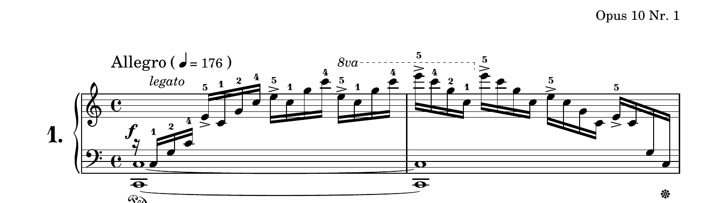
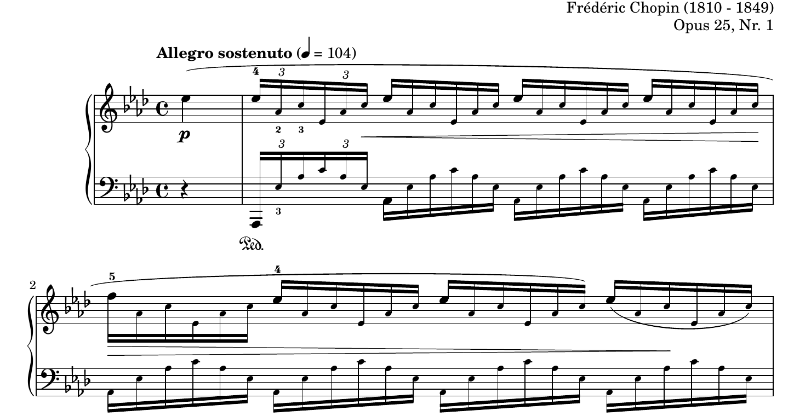
Op. 10 No. 1 與 Op. 25 No. 1 都以分解和弦作為主要技術材料，但音樂效果截然不同。前者以寬廣的音域跨越與和聲推進形成宏大的空間感；後者則透過連續而細密的琶音，襯托高音旋律與內聲部的變化。兩首作品顯示，同一類鋼琴技巧可以承載不同的音樂表情。
作品分析：聽 Op. 25 No. 1 時，可留意高速琶音中是否仍能聽見清楚的內在旋律；聽 Op. 10 No. 12 時，則要注意左手強勁流動與右手主題之間，究竟哪一條聲部真正主導情緒與張力。
版本比較：比較不同版本時，速度快慢並不是唯一標準。更重要的是聲部是否清楚、旋律是否仍能歌唱、和聲推進是否具有方向感。若一味追求速度而讓旋律線條模糊，往往就失去了蕭邦練習曲最核心的藝術要求。
音樂細節：觀察不同作品中的技術難度，如何被轉化為不同的情感性格：有的呈現明亮與飛揚，有的呈現沉思與歌唱，也有的轉化為持續推進的緊張與爆發力。
影音｜YouTube 延伸搜尋：Yunchan Lim 演奏 Op. 10、Op. 25
白晝場｜2月21日09:30至17:00
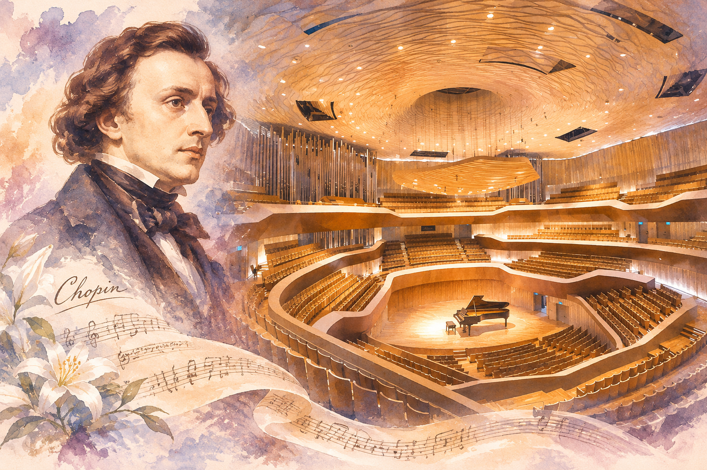
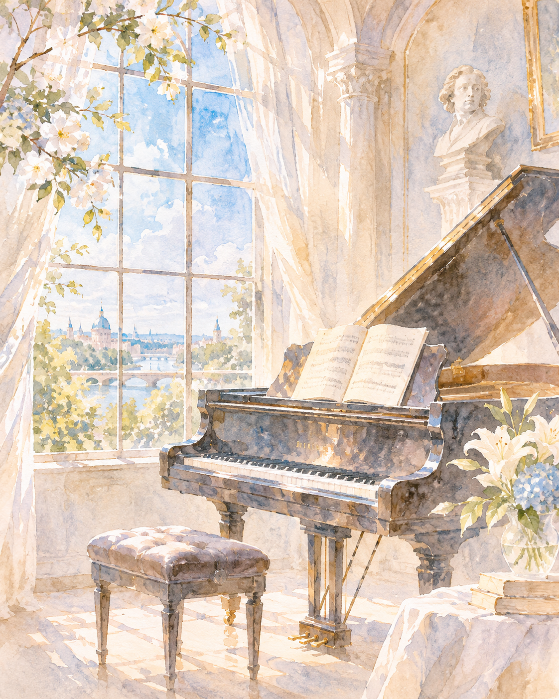
水彩創作插圖：清晨與鋼琴的意象
2月21日 09:30–17:00。 日出之後，曲目由前奏曲與敘事曲，走向室內樂、波蘭歌曲、即興曲、搖籃曲、船歌，並以第二號鋼琴協奏曲與葛拉祖諾夫《蕭邦組曲》作結。
09:35–10:25｜前奏曲選集（表演廳）
演奏者｜陳宜鍾
陳宜鍾出生於高雄，曾赴德國深造八年，先後就讀科隆、弗萊堡及德特蒙音樂院，師承陳必先、Jean-Efflam Bavouzet與Anatol Ugorski。她的演奏曲目涵蓋古典與現當代音樂，曾在台灣首演布列茲《第一號鋼琴奏鳴曲》，並完整演出梅湘《對聖嬰耶穌的二十凝視》。
她對現代鋼琴作品的投入，提供了理解蕭邦前奏曲的另一種背景：這二十四首短曲各自具有鮮明的節奏、織度與和聲性格，對演奏者的音色控制與作品整體布局都有不同要求。
本次演出曲目
- 降A大調《以輕快演奏的急板》WN 44
- 降e小調前奏曲《魔鬼的顫音》KK VI/6
- 二十四首前奏曲 Op. 28
- 升c小調前奏曲 Op. 45
前奏曲：從引子成為獨立的鋼琴作品
前奏曲（Prelude）早期常作為其他作品的引子。巴赫《平均律鍵盤曲集》將前奏曲與賦格配對；十九世紀之後，前奏曲逐漸成為可以獨立演奏的短曲。
蕭邦 Op. 28 包含二十四首作品，橫跨全部大小調，依五度圈推進，將關係大小調相鄰排列。各首的長度、速度、音型、和聲及情緒差異鮮明，整套作品因而形成一連串相互對照的音樂景觀。
它們既能獨立演奏，也能作為一套完整作品呈現。
四首代表作品與阿格麗希的演奏
第一首｜C大調，Agitato
以快速流動的音型展開，音樂在短小篇幅中持續向前推進。旋律與和聲並非分別存在，而是融合在不間斷的音型中。
直接聽阿格麗希：第一首 Op. 28 No. 1（影片開頭）
第四首｜e小調，Largo
右手旋律簡潔，左手和弦緩慢移動，內聲部的半音變化構成深沉而持續的張力。音樂的悲傷並不依靠強烈的音量，而來自每次和聲轉換所帶出的不安。
直接聽阿格麗希：第四首 Op. 28 No. 4（03:35）
第十五首｜降D大調，《雨滴》
反覆的音型貫穿作品。開頭具有安詳的抒情氣息，中段轉入較陰暗的音響，原先柔和的反覆音因此獲得不同的心理重量。
《雨滴》並非蕭邦本人正式命名的標題。
直接聽阿格麗希：《雨滴》Op. 28 No. 15（15:57）
第二十首｜c小調，Largo
這首前奏曲以短促而莊嚴的和弦構成。其和聲進行具有近似聖詠的色彩，少量的音樂材料卻形成清楚的情緒轉折。
拉赫曼尼諾夫後來以此曲為主題，創作《蕭邦主題變奏曲》Op. 22，將短小的和弦性前奏曲擴展為大型變奏作品。它與凌晨06:45的演出形成直接呼應。
直接聽阿格麗希：第二十首 Op. 28 No. 20（26:03）
蕭邦原作譜例
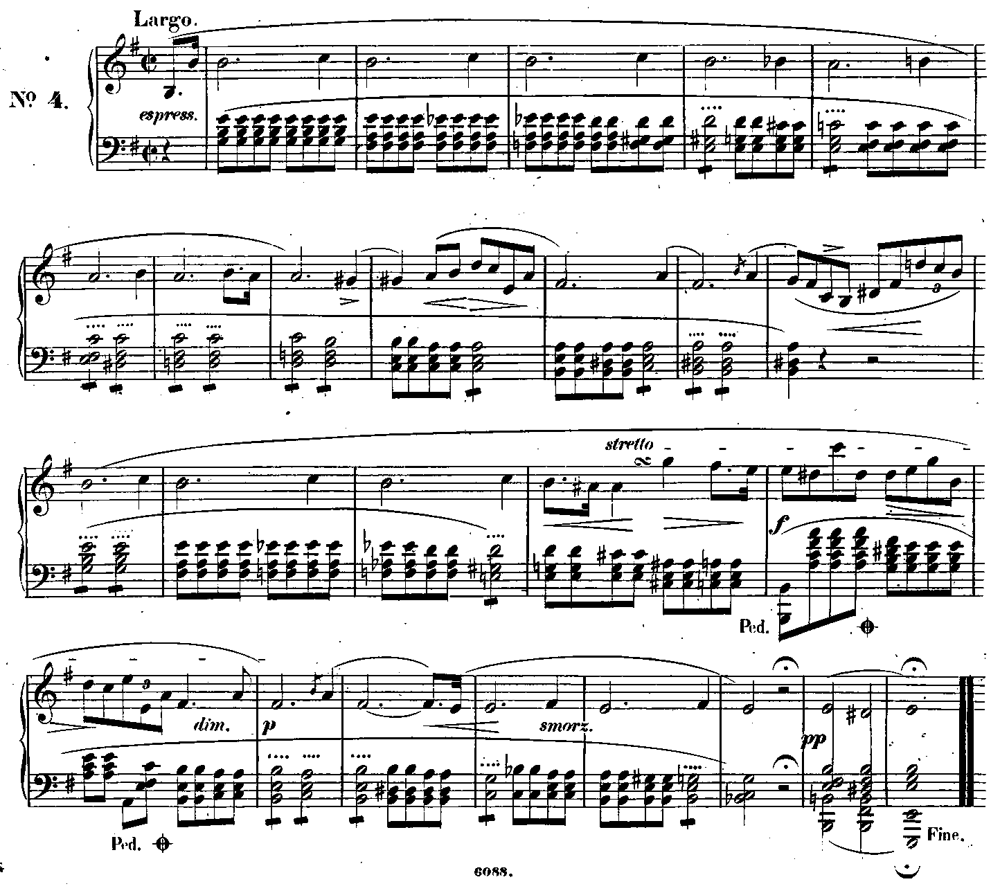
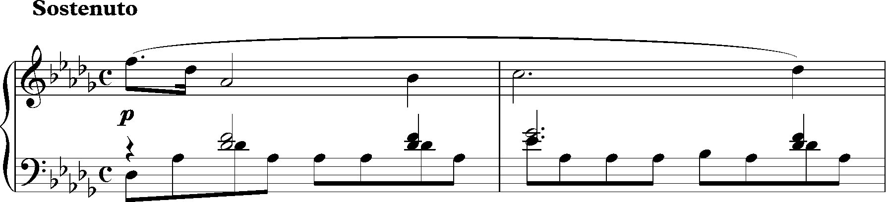
Op. 45、WN 44 與 KK VI/6：曲集之外的三種前奏曲
Op. 28 是一套以二十四個調性組成的完整循環；升c小調 Op. 45 則是獨立發表的晚期前奏曲，篇幅較長、和聲轉折更為延展，讓旋律在持續變化的和聲色彩中逐步展開。WN 44 的降A大調《以輕快演奏的急板》與 KK VI/6 降e小調《魔鬼的顫音》同樣是獨立的小型作品，前者明亮輕巧，後者以顫音與不安的色彩形成鮮明對照。
這三首與 Op. 28 同場，讓「前奏曲」不只呈現為一套調性循環，也展現蕭邦在不同時期、不同篇幅中處理短曲的方式。
阿格麗希的二十四首前奏曲
阿格麗希在這套作品中展現鮮明的速度、力度與性格對比。快速作品具有強烈推進力；慢速作品則透過和聲及旋律的細微變化，建立不同的張力。
整套作品的戲劇性也來自相鄰前奏曲的對照：激動之後可能突然安靜，短促的爆發也可能接續深沉的冥想。
其他演奏版本與曲目搜尋
- 波里尼演奏蕭邦前奏曲（YouTube 搜尋）
- 齊瑪曼演奏前奏曲（YouTube 搜尋）
- 蕭邦 Op. 45 前奏曲（YouTube 搜尋）
- 蕭邦 WN 44 前奏曲（YouTube 搜尋）
- 蕭邦 KK VI/6《魔鬼的顫音》（YouTube 搜尋）
以上搜尋入口供查找各作品及演奏版本，並非指稱為陳宜鍾的已核實錄影。
09:45–10:15｜講座：蕭邦與後世（音樂廳）
主講者｜焦元溥
焦元溥為音樂評論家、作家及廣播主持人，擁有倫敦國王學院（King's College London）音樂學博士學位。長期關注鋼琴音樂、音樂家訪談與演奏詮釋，著有《聽見蕭邦》、《遊藝黑白——世界鋼琴家訪問錄》等作品。
他曾參與多項鋼琴音樂節策劃，包括「20X10蕭邦音樂節」與「Debussy Touch鋼琴音樂節」。其音樂研究與訪談經驗，使這場講座能從作曲、演奏及音樂史的不同面向切入。
蕭邦如何影響後世
蕭邦對後世的影響，不只在鋼琴技巧，也涉及和聲、旋律、音色與曲式。他將練習曲轉化為音樂會作品，使夜曲、前奏曲及敘事曲具有更豐富的表現可能；其對鋼琴音色與踏板的探索，也為後來的鋼琴創作提供重要參照。
可從以下三組作品理解這些關係。
蕭邦與拉赫曼尼諾夫
拉赫曼尼諾夫以蕭邦 c小調前奏曲 Op. 28 No. 20 為主題，創作《蕭邦主題變奏曲》Op. 22。原作篇幅短小，主要由莊嚴的和弦構成；拉赫曼尼諾夫則透過連續變奏，擴展為大型鋼琴作品。
直接聽阿格麗希：蕭邦 Op. 28 No. 20（26:03）
拉赫曼尼諾夫《蕭邦主題變奏曲》Op. 22（YouTube 搜尋）
這組作品也呼應本次凌晨06:45–07:45林冠廷的演出。
蕭邦與史克里亞賓
史克里亞賓的二十四首前奏曲 Op. 11 延續蕭邦以二十四首作品涵蓋全部大小調的構想。兩位作曲家都以短小作品展現不同的鋼琴音響與情緒，但史克里亞賓逐漸發展出更具個人特色的和聲語言。
史克里亞賓二十四首前奏曲 Op. 11（YouTube 搜尋）
蕭邦與德布西
蕭邦對和聲色彩、踏板與聲部層次的處理，對後來的法國鋼琴音樂具有重要意義。德布西在《前奏曲》中進一步探索音色、和聲與音響空間，使鋼琴能呈現不同於傳統旋律與伴奏分工的聲響世界。
直接聽魯賓斯坦：蕭邦夜曲 Op. 27 No. 2（35:35）
以上三組作品為本手冊提供的延伸導聆，不代表焦元溥已公布的實際講座曲目或講述順序。
主講者相關影音
時間提示：本講座與09:35表演廳前奏曲場部分重疊。
10:45–11:25｜四首敘事曲（音樂廳）
本次演出者：橫山幸雄。這是他在24小時內的第二次演出；其與蕭邦作品的完整經歷已見本文後方〈本次演奏家介紹〉，本場不重複列述。
曲種介紹｜敘事曲
敘事曲（Ballade）原與敘事詩歌及民間歌謠有關。十九世紀時，蕭邦將這一名稱引入大型鋼琴獨奏作品，使純器樂也能透過主題的出現、變形、衝突與再現，呈現近似文學敘事的發展。
蕭邦四首敘事曲並沒有固定的故事文本，也不採完全相同的曲式；它們各自透過主題對比、和聲轉折、調性布局與尾聲，形成不同的戲劇發展。
第一號｜g小調，Op. 23
第一號以帶有懸念的慢速引子開始，接著展開富有歌唱性的主要主題。音樂在抒情與激烈段落間不斷轉換，主題回返時帶有更大的情緒重量，最終進入充滿戲劇張力的尾聲。大幅度的情緒對比，以及主題與和聲逐漸累積的推進力，是作品的核心特徵。
第二號｜F大調／a小調，Op. 38
第二號以柔和、近乎田園風格的旋律開始，隨後突然出現強烈的 Presto con fuoco 段落。平靜與風暴的鮮明對照，是這首作品最突出的結構特徵；當原先的抒情材料重新出現時，整首作品的情緒意義也逐漸改變。
原作樂譜｜第二號敘事曲 Op. 38（IMSLP 歷史版本與使用資訊）
第三號｜降A大調，Op. 47
第三號敘事曲具有相對明朗、流動的音樂性格，主題帶有優雅的舞蹈律動。作品雖不像第二號具有極端的段落對抗，卻透過節奏、和聲與主題變形逐步增加張力；看似自然流暢的旋律，逐漸發展成富有戲劇性的音樂結構。
第四號｜f小調，Op. 52
第四號是蕭邦晚期最複雜的鋼琴作品之一。短暫引子之後出現抒情主題，隨後透過變奏、對位、內聲部交錯及半音和聲逐步展開。主題每次返回時，雖然仍可辨認原來的輪廓，但伴奏織度、聲部及和聲環境已產生變化，最終尾聲將前面累積的張力推向高潮。
齊瑪曼全集及版本比較
- Arthur Rubinstein：四首敘事曲（YouTube 搜尋）
- Martha Argerich：第一號敘事曲（YouTube 搜尋）
- Seong-Jin Cho：第四號敘事曲（YouTube 搜尋）
- Yukio Yokoyama：蕭邦敘事曲（YouTube 搜尋）
上述搜尋連結僅供查找候選演奏版本，並非已核實的指定錄影。
11:45–13:00｜蕭邦室內樂作品（表演廳）
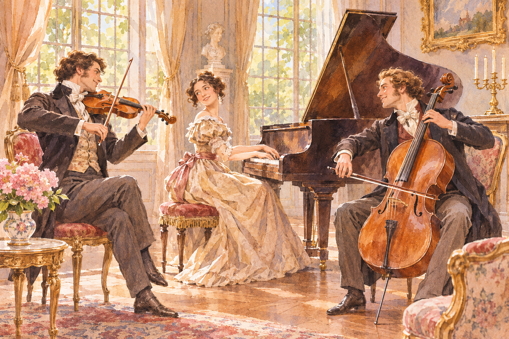
南台灣鋼琴三重奏
本場演奏者為鋼琴家吳亞欣、小提琴家薛志璋與大提琴家高炳坤。三人組成的南台灣鋼琴三重奏自2018年開始合作，演奏曲目涵蓋莫札特、貝多芬、舒伯特、舒曼、布拉姆斯及拉威爾等作曲家，並曾參與衛武營「瘋迷24」系列演出。這次合作呈現蕭邦室內樂的不同面貌：早期的鋼琴三重奏、華麗的大提琴與鋼琴二重奏，以及晚期具有複雜對位與聲部關係的大提琴奏鳴曲。三人合作紀錄（國藝會）
吳亞欣｜鋼琴
吳亞欣出生於高雄，畢業於國立臺灣師範大學音樂系，取得美國琵琶第音樂院鋼琴演奏碩士及馬里蘭大學音樂藝術博士。返臺後持續投入鋼琴獨奏、協奏曲演出與室內樂合作，並參與南台灣室內樂協會的藝術推廣。演奏家資料
薛志璋｜小提琴
薛志璋取得德國德特蒙音樂院藝術家文憑，曾任德特蒙歌劇院第二小提琴首席、澳門樂團副首席、國立臺灣交響樂團及高雄市交響樂團首席，亦長期參與室內樂演出與教學。演奏家資料
高炳坤（Victor Coo）｜大提琴
高炳坤為菲律賓華裔大提琴家，取得美國密西根州立大學音樂藝術博士。長期活躍於大提琴獨奏與室內樂領域，並參與 Taiwan Connection 室內樂團及 Voyage 弦樂四重奏；現任教於國立臺北藝術大學。演奏家資料
曲種介紹｜室內樂與鋼琴三重奏
室內樂（Chamber Music）通常由少數演奏者共同呈現，各件樂器的聲部相對獨立，音樂透過旋律交換、模仿、和聲及節奏上的互動形成整體。鋼琴三重奏由鋼琴、小提琴與大提琴組成；大提琴奏鳴曲則是大提琴與鋼琴的二重奏作品。兩種編制都不只是鋼琴伴奏弦樂器，而是在不同段落中讓各件樂器承擔旋律、和聲與節奏的不同功能。
蕭邦主要以鋼琴獨奏作品聞名，但他的室內樂同樣展現細膩的聲部處理。從青年時期的 Op. 8 到晚期 Op. 65，可以觀察他如何由較具協奏性格的鋼琴寫作，逐漸走向複雜的器樂對話。
第一首｜《序奏與華麗的波蘭舞曲》Op. 3
編制：大提琴與鋼琴
這首早期作品以抒情的序奏開始，隨後進入具有波蘭舞曲節奏的華麗段落。大提琴的歌唱性與鋼琴明亮的技巧交替呈現，保留青年蕭邦具有沙龍音樂特色的一面。作品中的波蘭舞曲節奏帶有莊重又活潑的舞步感，和前夜獨奏波蘭舞曲的宏大性格形成對照。
第二首｜g 小調鋼琴三重奏 Op. 8
編制：鋼琴、小提琴與大提琴
Op. 8 是蕭邦青年時期的重要室內樂作品，具有四樂章架構。作品中的鋼琴聲部相當豐富，小提琴與大提琴則與鋼琴共同參與主題發展。第一樂章具有開闊的奏鳴曲結構；詼諧曲展現鮮明的節奏；慢樂章具有親密的歌唱性；終樂章則帶有輕快的律動與舞蹈氣息。這首作品也呈現青年蕭邦尚未完全專注於鋼琴獨奏時，對多樂器編制的探索。
原作譜例：已確認的網頁來源可開啟原始歷史版本，但目前未取得可明確核對頁碼與重製條件的適合影像；因此保留IMSLP：Op. 8 原作樂譜供檢視第一樂章開頭的鋼琴、小提琴與大提琴三個聲部，不以自製示意譜代替。
第三首｜g 小調大提琴奏鳴曲 Op. 65
編制：大提琴與鋼琴
這首作品完成於蕭邦晚年，獻給他的好友、法國大提琴家 Auguste Franchomme，是蕭邦晚期重要的室內樂創作。第一樂章以豐富的主題材料與對位組織展開；鋼琴與大提琴各自具有獨立的音樂線條，聲部關係比早期作品更為複雜。第二樂章 Scherzo 具有明顯的節奏張力；第三樂章 Largo 短小而深情；第四樂章則以更活躍的節奏推動全曲結束。兩件樂器不斷交換旋律、伴奏與節奏推進的角色，形成高度整合性的室內樂語言。
原作譜例：第一樂章中大提琴與鋼琴共同呈現主要主題的段落，可由IMSLP：Op. 65 原作樂譜檢視。為避免在未核對歷史版本、頁碼與使用條件前誤植圖片，本頁暫不嵌入裁切譜例。
直接聽 Mischa Maisky、Martha Argerich 演奏 Op. 65 第一樂章
此為已知演奏者的指定錄音，不是本次衛武營演出實況。
版本比較｜麥斯基與阿格麗希
阿格麗希與麥斯基的合作錄音，可以呈現鋼琴與大提琴在室內樂中的不同角色。大提琴有時以長線條旋律帶領音樂，鋼琴則透過和聲與節奏提供支撐；有時鋼琴的音型與內聲部成為主要動力，大提琴則與其交錯回應。這種角色轉換，使 Op. 65 與蕭邦的鋼琴獨奏作品呈現不同的音樂關係。
時間提示：本場與12:00音樂廳講座〈文學中的蕭邦〉部分重疊。
12:00–12:30｜文學作品中的蕭邦：蕭邦的音樂與時代意義（音樂廳）
主講：焦元溥
焦元溥為音樂評論家、作家及廣播主持人，擁有倫敦國王學院音樂學博士學位，長期研究鋼琴演奏與音樂史，並訪談世界各地的重要鋼琴家。著有《聽見蕭邦》、《遊藝黑白——世界鋼琴家訪問錄》等著作，亦曾策劃「20X10蕭邦音樂節」等活動。焦元溥官方簡介（臺中國家歌劇院）
講座導聆｜蕭邦與浪漫主義文學
蕭邦生活的十九世紀，是歐洲浪漫主義文學與音樂相互影響的重要時期。波蘭民族意識、流亡經驗、巴黎文化生活，以及作家對藝術家形象的描寫，都構成理解蕭邦的歷史背景。
蕭邦雖然不像李斯特某些交響詩那樣，以明確的文學情節安排作品，但他的敘事曲、夜曲與幻想曲經常使後世聽者聯想到文學中的敘述、回憶、衝突與情感轉折。
以下是本手冊提供的延伸閱讀與音樂連結，並非焦元溥已公布的講座大綱。
1. 波蘭詩人密茨凱維奇與蕭邦敘事曲
亞當・密茨凱維奇（Adam Mickiewicz）是波蘭浪漫主義文學的重要作家，也是波蘭民族文化的重要代表。蕭邦四首敘事曲與浪漫主義敘事詩之間的關係，長期受到音樂史研究者討論。舒曼曾記述蕭邦提到密茨凱維奇詩歌的影響，但蕭邦沒有為四首敘事曲留下逐首對應特定詩篇的正式故事說明。因此，這些作品可以從文學敘事的角度欣賞，卻不宜將每段音樂直接當成某首詩的情節配樂。
2. 喬治・桑與文學中的蕭邦
法國作家喬治・桑（George Sand）與蕭邦長期交往。她的小說、書信及回憶文字，是研究十九世紀巴黎文化生活與蕭邦生平時經常涉及的重要材料。其中，小說《Lucrezia Floriani》常被後世研究者與兩人的關係聯繫起來，但小說人物並不能簡單視為真實人物的完整傳記。透過這類文學作品，可以理解十九世紀作家如何描繪藝術家、愛情、疾病、性格與創作生活，也能觀察小說敘事和歷史記錄之間的差異。
George Sand《Lucrezia Floriani》相關資料（搜尋）
這段音樂只是搭配文學主題的延伸欣賞，不是《Lucrezia Floriani》的配樂。
3. 流亡、故鄉與波蘭民族文學
蕭邦1830年離開波蘭，之後長期居住巴黎，再也沒有返回故鄉。對十九世紀流亡的波蘭藝術家而言，民族文化、母語、民間舞蹈與故鄉記憶具有重要意義。蕭邦的馬厝卡與波蘭舞曲，也常被放在這樣的歷史背景中理解。這些作品不一定描寫具體的歷史事件，卻透過波蘭民間節奏、調式與舞蹈語彙，使鋼琴音樂具有鮮明的文化特徵。
本日節目呼應
10:45–11:25｜四首敘事曲透過無文字的器樂作品，呈現音樂中的敘述感與戲劇發展；11:45–13:00｜蕭邦室內樂作品則呈現蕭邦如何運用不同樂器的聲部交流，發展音樂中的對話與對比。
時間提示：本講座12:00–12:30在音樂廳舉行，與11:45–13:00表演廳的蕭邦室內樂演出重疊，無法完整參與兩場。
13:20–14:10｜蕭邦《波蘭歌曲全集》（音樂廳）
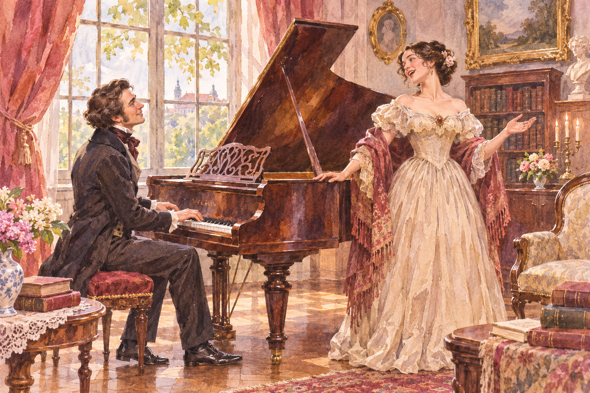
林映旻｜女高音
林映旻畢業於英國皇家伯明罕音樂學院，取得聲樂表演碩士學位。她的演出涵蓋歌劇、藝術歌曲與獨唱會，曾演出拉威爾《孩童與魔法》中的火與夜鶯、浦契尼《強尼・史基基》中的 Lauretta，以及洪伯定克《糖果屋》中的 Gretel 等角色；亦曾舉辦以十九世紀後聲樂作品為主題的獨唱會。演奏者資料（台新銀行文化藝術基金會）
賴致融｜鋼琴
賴致融曾於英國皇家音樂學院（Royal College of Music）深造，取得鋼琴演奏碩士及演奏文憑，師事 Ilya Kondratiev 與 Sofya Gulyak。他曾獲英國溫莎國際鋼琴大賽第三獎及維也納海頓鋼琴大賽首獎，演奏曲目涵蓋德奧古典與浪漫主義作品，也積極參與台灣音樂會及室內樂演出。本次與林映旻合作，使鋼琴由獨奏舞台轉向藝術歌曲中的聲樂夥伴。演奏者介紹
本次演出曲目
- 蕭邦：波蘭歌曲 Op. 74
- WN 31〈Czary〉
- WN 57〈Dumka〉（《Nie ma, czego trzeba》早期版本）
- WN 17a〈Jakież kwiaty, jakie wianki〉
從波蘭詩歌到藝術歌曲
藝術歌曲（Art Song）將詩詞、人聲與鋼琴融合成完整的音樂作品。歌者透過語言的重音、音節與詩句傳達意義，鋼琴則能透過節奏、和聲與音型，形成與詩意相呼應的音樂情境。蕭邦的波蘭歌曲不像夜曲、練習曲與馬厝卡那樣廣為人知，卻保留了他與波蘭語言、詩歌及民間文化之間的重要聯繫。
這些歌曲題材涵蓋愛情、離別、鄉村生活、舞蹈、思念與民族情感；旋律有時帶有民歌般的直接性，有時則展現細膩的抒情表現。蕭邦的歌曲多於生前未正式出版，後來以 Op. 74 等編號整理出版；不同版本的收錄與排序存在差異，因此創作年代、出版年代與後來編號不可混為一談。
IMSLP：蕭邦《波蘭歌曲》Op. 74 的作品資料、歷史版本與樂譜
波蘭歌曲的聲音：四首代表作品
《少女的願望》Życzenie，Op. 74 No. 1
作品具有輕盈的舞蹈性格，旋律直接而靈巧，鋼琴以流動的節奏支持歌者。
《歡宴》Hulanka，Op. 74 No. 4
活潑的節奏和波蘭語歌詞緊密結合，呈現蕭邦歌曲中外向、幽默的一面。
《俊美的少年》Śliczny chłopiec，Op. 74 No. 8
旋律帶有民間歌謠的特徵，短小的樂句與清楚的節奏使歌曲顯得自然生動。
《旋律》Melodia，Op. 74 No. 9
歌曲以沉靜而富有表情的旋律呈現較深沉的情感，與前三首歌曲形成明顯對比。
指定錄音
演唱：Aleksandra Kurzak（女高音）、Mariusz Kwiecień（男中音）；鋼琴：Nelson Goerner（使用 1848 年 Pleyel 鋼琴）。
這是波蘭演奏家的參考錄音，不是本次衛武營林映旻與賴致融的演出。
另一版本：Elżbieta Szmytka 演唱蕭邦 Op. 74 歌曲全集
蕭邦原作聲樂譜例
已核對 IMSLP 收錄的 1859 年華沙 Gebethner 首版，明列為波蘭語、公版歷史版本。其下載入口在目前環境需要網頁端 JavaScript 才能取得原檔，故本頁不放無法再次核對的裁切圖，以免誤植。可直接檢視1859 波蘭文首版完整樂譜，其中包括：〈Życzenie〉開頭的歌詞、聲樂旋律與舞蹈式鋼琴伴奏，以及〈Melodia〉開頭的詩句、歌唱旋律與和聲。頁面所列版本為 Warsaw: Gustawa Gebethnera I Spółki, 1859，Public Domain。
李斯特改編蕭邦歌曲
李斯特將蕭邦的歌曲改編為鋼琴獨奏《六首波蘭歌曲》S. 480，提供從「有歌詞的旋律」到「無詞鋼琴歌唱」的比較。
從歌曲回到蕭邦夜曲
蕭邦的夜曲經常被形容具有歌唱性，但在波蘭歌曲中，人聲與文字使這種歌唱性更加具體。波蘭語的語言重音、詩句長短以及文字的情緒轉折，直接塑造聲樂樂句；鋼琴伴奏則藉由和聲、節奏與音型，延伸歌曲的情感。相較之下，夜曲沒有歌詞，鋼琴家需要透過觸鍵、呼吸、連奏與裝飾音，讓右手旋律呈現近似人聲的表情。
這兩種音樂都展現蕭邦的歌唱性，但在人聲與鍵盤之間，呈現不同的語句構造與情感表現。
14:30–15:40｜輪旋曲、即興曲、搖籃曲與船歌（表演廳）
本次演出者：黃俊瑜與陳芝羽；本場也包括雙鋼琴《輪旋曲》Op. 73，因此不只是鋼琴獨奏小品的組合，而是一場可觀察蕭邦不同曲種與鋼琴寫作面向的節目。
演奏者資訊｜黃俊瑜與陳芝羽
本場由兩位鋼琴家共同呈現蕭邦不同時期、不同性格的作品。其中雙鋼琴《輪旋曲》Op. 73 特別顯示蕭邦早期作品中較少被單獨提出的一面：它仍帶有公開演出、炫技與明亮交流的氣氛。相較之下，《搖籃曲》Op. 57 與《船歌》Op. 60 則屬較成熟、內斂而高度精細的鋼琴語言。這樣的安排，使本場成為從外向華麗到深層抒情的一次橫向比較。
曲種介紹｜輪旋曲、即興曲、搖籃曲、船歌
輪旋曲（rondo）通常以一個主要主題反覆回返，並在其間插入不同段落；蕭邦也曾為雙鋼琴寫作《輪旋曲》Op. 73。即興曲（impromptu）是十九世紀常見的鋼琴性格小品，名稱雖帶有即興意味，但作品本身往往仍具有清楚的段落布局與結構控制。搖籃曲（berceuse）取材自哄睡歌曲的平穩律動，蕭邦 Op. 57 以幾乎固定的伴奏支撐右手層層展開的變化。船歌（barcarolle）源於威尼斯船夫歌曲，常以 6/8 或 12/8 拍呈現搖曳節奏；蕭邦 Op. 60 則把這種節奏發展為篇幅較大、和聲極為細緻的晚期鋼琴作品。
本場節目把幾種不同性格的曲種並置：輪旋曲偏向主題再現與外向的舞台性；即興曲帶有較自由的流動感；《搖籃曲》在幾乎不變的基礎上追求聲部與裝飾的細節；《船歌》則將搖曳節奏、雙音歌唱與晚期和聲色彩結合，形成蕭邦最成熟也最精緻的鋼琴語言之一。
Op. 57《搖籃曲》與 Op. 60《船歌》
Op. 57《搖籃曲》的低音與和聲框架十分穩定，左手像不斷擺動的搖籃，右手則在其上逐漸增加裝飾、音型與聲部層次。它並不是靠戲劇性的對比推進，而是在極小的變化中累積質地與色彩。
Op. 60《船歌》寫於 1845–1846 年，是蕭邦晚期最重要的鋼琴作品之一。全曲以 12/8 拍的搖曳節奏為基礎，旋律常以三度、六度雙音歌唱，和聲則不斷往更細膩、更曖昧的方向延展。它表面平穩，內部卻有極強的結構推進與高潮安排。
作品分析
《搖籃曲》以幾乎不變的背景和不斷改變的前景形成張力：左手提供穩定基底，右手的裝飾、聲部密度與音色則逐步增長。《船歌》則從開頭的搖曳節奏開始，讓旋律持續向上推進、音響逐漸擴張，最後形成明亮而寬廣的高潮。
版本比較
比較《船歌》的不同版本時，速度快慢不是唯一重點。伴奏的搖曳感、雙音旋律的歌唱性、內聲部的清晰程度，以及高潮前呼吸與留白的安排，都會改變作品的方向。五位鋼琴家的版本各有側重：有的較重透明線條，有的較重浪漫歌唱，也有的更強調結構與音響推進。
音樂細節
- 左手搖曳節奏是否始終穩定存在；
- 右手雙音旋律如何保持歌唱性；
- 高潮前後的和聲色彩如何改變整體光線感。
而在《搖籃曲》中，同一個安定律動上，右手以不同的裝飾方式讓音樂持續生長。
影音與原譜
- 指定比較：Pollini、Zimerman、Kissin、Horowitz、Argerich 五版《船歌》
- 直接聽 Argerich 版本《船歌》35:21
- 直接聽 Arthur Rubinstein：〈搖籃曲〉Op. 57
- 直接聽 Daniil Trifonov：〈幻想即興曲〉Op. 66
- 直接聽 Samson François、Pierre Barbizet：雙鋼琴《輪旋曲》Op. 73
- 原譜：〈搖籃曲〉Op. 57（IMSLP）
- 原譜：〈船歌〉Op. 60（IMSLP）
本節保留原譜連結；未嵌入未核對版本與使用條件的裁切譜例，也不自行重畫或簡化音符。
16:00–17:00｜管絃樂系列3：第二號鋼琴協奏曲與葛拉祖諾夫（音樂廳）
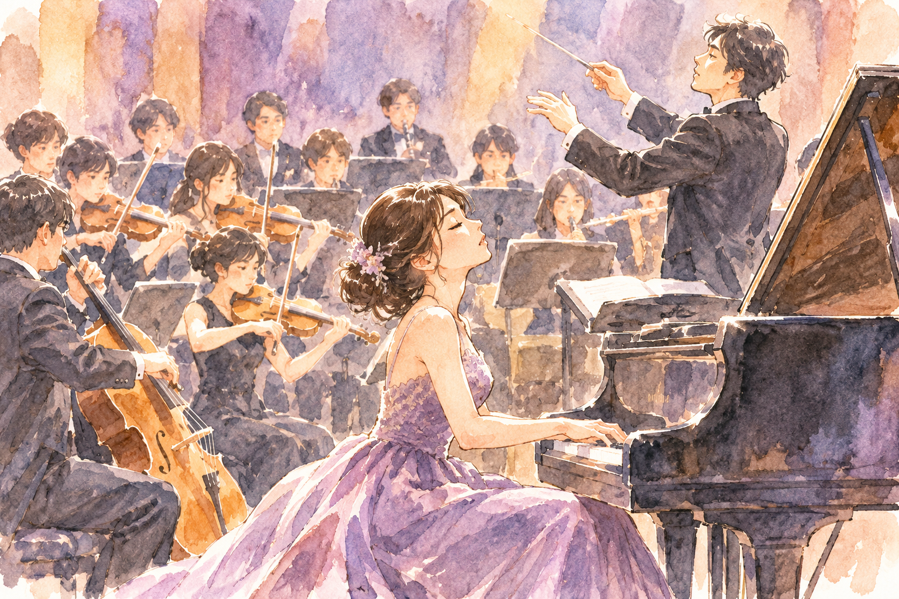
本次演出曲目
- 蕭邦：f 小調第二號鋼琴協奏曲 Op. 21
- 葛拉祖諾夫：《蕭邦組曲》（Chopiniana）Op. 46
謝維庭｜鋼琴
謝維庭為臺灣鋼琴家，曾獲英國溫莎國際鋼琴大賽首獎、德國艾特林根國際鋼琴大賽第二獎；2021 年代表臺灣參加第十八屆蕭邦國際鋼琴大賽，晉級第二輪。她曾於法國巴黎國立高等音樂院及德國漢諾威音樂學院深造，取得最高演奏家文憑，長期參與獨奏、室內樂及鋼琴協奏曲演出，現任教於國立臺北教育大學音樂學系。本次擔任閉幕場第二號鋼琴協奏曲的獨奏者，也使她參與蕭邦國際大賽的經驗與演出相互呼應。
廖元宏｜指揮
廖元宏（Brian Liao）為臺灣指揮家，畢業於奧地利薩爾茲堡莫札特音樂大學，取得指揮碩士學位。他曾於 2023 年獲西班牙利里亞國際指揮大賽金牌，並於 2026 年獲索非亞國際指揮大賽首獎。2023 年他曾在衛武營與對位室內樂團合作「貝多芬交響曲 24 小時馬拉松」，此次再度參與衛武營的 24 小時音樂計畫。
對位室內樂團
本場由對位室內樂團（Counterpoint Ensemble）演出。樂團持續以室內樂、跨域製作與音樂推廣為工作方向，官方網站亦記錄其在衛武營「瘋迷 24」系列的演出。此場由樂團與鋼琴獨奏者、指揮共同完成協奏曲與管弦樂改編作品。
蕭邦：f 小調第二號鋼琴協奏曲 Op. 21
第二號鋼琴協奏曲雖然編號為第二號，實際創作於 1829 年，比 e 小調第一號鋼琴協奏曲 Op. 11 更早完成。兩首作品皆屬蕭邦青年時期，已展現華麗的快速音群、歌唱性的抒情旋律，以及鋼琴與管弦樂團之間的對比。本場也與 2 月 20 日 17:00 的第一號鋼琴協奏曲開幕場相互呼應，讓兩首協奏曲構成整個 24 小時活動的首尾框架。
第一樂章｜Maestoso
管弦樂先呈示主要材料，鋼琴進入後把主題發展為帶有裝飾與快速音型的獨奏段落。樂章保有古典協奏曲的正式架構，也讓青年蕭邦的炫技與抒情性格在鋼琴聲部中交錯出現。
第二樂章｜Larghetto
這是作品最著名的抒情段落之一。鋼琴以歌唱性旋律展開，裝飾音與延宕使樂句帶有接近夜曲的美聲氣質；中段則轉入近似宣敘調的戲劇性段落，讓抒情之中出現鮮明對比。
直接聆聽｜Martha Argerich：第二樂章 Larghetto
第三樂章｜Allegro vivace
終樂章融入波蘭馬厝卡舞曲的節奏色彩：輕快旋律、富彈性的重音與鋼琴技巧交錯推進，在明亮而具舞蹈動感的氣氛中結束，也與前面馬厝卡專場所介紹的波蘭舞蹈語彙形成呼應。
完整演出｜Arthur Rubinstein、倫敦交響樂團、André Previn：第二號鋼琴協奏曲 Op. 21
葛拉祖諾夫：《蕭邦組曲》（Chopiniana）Op. 46
俄國作曲家亞歷山大・葛拉祖諾夫於 1892 年完成《蕭邦組曲》Op. 46，將原屬鋼琴的旋律、伴奏與和聲重新分配給弦樂、木管與銅管，讓蕭邦的音樂取得另一種音色與空間感。作為本次 24 小時活動的最後一首作品，它把蕭邦本人的鍵盤世界延伸到後世作曲家的管弦樂想像。
IMSLP 將 1892 年原版列為四段：〈波蘭舞曲〉（蕭邦 Op. 40 No. 1）、〈夜曲〉（Op. 15 No. 1）、〈馬厝卡〉（Op. 50 No. 3）與〈塔朗泰拉舞曲〉（Op. 43）。1907 年為芭蕾《仙女們》修訂時，另加入〈圓舞曲〉（Op. 64 No. 2），形成較常見的五段版本。衛武營本場公告僅列《蕭邦組曲》Op. 46，未標示採用版本，因此本手冊不將上述任一版本認定為當日的唯一曲序。
完整總譜與版本資料｜葛拉祖諾夫《蕭邦組曲》Op. 46（IMSLP）
原作樂譜
本節保留可開啟的完整歷史樂譜來源。未嵌入尚未逐頁確認出版版本、頁碼與重製條件的裁切圖，因此不以自行繪製或簡化的音符示意取代原譜。
從鋼琴獨奏走向管弦樂
2027 年《瘋迷 24 蕭邦》從第一號鋼琴協奏曲揭開序幕，到第二號鋼琴協奏曲與葛拉祖諾夫《蕭邦組曲》結束。二十四小時之中，聽眾經歷了練習曲、夜曲、馬厝卡、波蘭舞曲、敘事曲、前奏曲、室內樂與聲樂作品；最終鋼琴重新回到樂團之中，而葛拉祖諾夫的改編又把蕭邦的音樂帶入另一個世代。這個結尾既是活動的收束，也呈現蕭邦音樂持續進入後世演奏與創作的方式。
衛武營「瘋迷24」歷屆活動回顧
24小時音樂馬拉松的策展方式
衛武營國家藝術文化中心自2022年起推出「瘋迷24」系列：在連續24小時裡，以同一位作曲家為中心，由多位演奏者接力演出，讓觀眾自由穿梭於日落、深夜與白晝之間。這項策展方式打破傳統音樂會通常只容納一到兩小時曲目的限制，也讓聆聽不只是欣賞單一名作，而能從不同曲種、年代、編制及詮釋角度重新認識作曲家。
| 年度 | 主題作曲家 | 系列中的音樂世界 |
|---|---|---|
| 2022 | 舒伯特（Schubert） | 歌曲、室內樂及浪漫主義的抒情傳統 |
| 2023 | 莫札特（Mozart） | 從古典樂派的戲劇感走向不同器樂編制 |
| 2024 | 貝多芬（Beethoven） | 由古典形式走向強烈的個人精神與變革 |
| 2025 | 柴可夫斯基（Tchaikovsky） | 俄國旋律、交響曲、協奏曲與芭蕾音樂 |
| 2026 | 巴赫（J. S. Bach） | 管風琴、古樂與跨風格的現代改編 |
| 2027 | 蕭邦（Chopin） | 聚焦鋼琴、波蘭舞曲、歌唱性與演奏藝術 |
以下按年份記錄前五屆的演出特色，並附上2027年蕭邦場的活動及周邊資訊。衛武營〈瘋迷同學會：那些年，我們一起追的作曲家〉亦回顧前五屆的作曲家。
2022年：舒伯特（Franz Schubert）
時間：2022年2月19日17:00至20日17:00。首屆《瘋迷24舒伯特》以31歲便離世、卻留下大量作品的舒伯特為主角。舒伯特的創作橫跨藝術歌曲、交響曲、弦樂四重奏、鋼琴奏鳴曲和四手聯彈，讓觀眾能從「歌曲之王」之外重新認識這位作曲家。音樂廳安排交響樂系列；表演廳有《死與少女》弦樂四重奏、C大調弦樂五重奏、鋼琴三重奏與鋼琴奏鳴曲，三樓大廳還有四手聯彈與談話節目。
節目特色：交響樂與親密的室內樂並行，加上公共鋼琴及親子活動，奠定了此後多場館、跨年齡層的形式。舒伯特的歌曲所展現的詩意，也預告了2027年蕭邦夜曲中「無詞歌唱」的審美。
2023年：莫札特（Wolfgang Amadeus Mozart）
時間：2023年2月11日17:00至12日17:00。第二屆把重心轉到莫札特的古典風格及其豐富的音樂戲劇性。音樂廳集合管絃樂團、協奏曲獨奏家及聲樂家；表演廳呈現室內樂與解說式聲樂節目。官方曲目包括長笛四重奏K. 285、雙簧管四重奏K. 370、弦樂四重奏K. 590，以及歌劇之外的藝術歌曲與音樂會聲樂作品。活動亦安排爵士樂手參與。
節目特色：節目從「神童」形象延伸至歌劇、協奏曲、室內樂和聲樂相互對照。莫札特的歌唱性與鋼琴協奏曲寫作，也為聆聽蕭邦兩首鋼琴協奏曲提供有意思的歷史參照。
2024年：貝多芬（Ludwig van Beethoven）
時間：2024年3月2日17:00至3日17:00。第三屆最鮮明的安排，是依編號順序演出貝多芬九首交響曲全集；在兩廳與公共空間之間，還穿插弦樂四重奏、器樂奏鳴曲、鋼琴三重奏和午夜爵士改編。九首交響曲的風格由第一、第二號的古典語法發展，歷經第三號《英雄》與第五號的張力，直到第九號加入人聲所形成的規模。
節目特色：以交響曲全集提供明確的歷史與曲式軸線，再透過小型編制展示貝多芬的另一面。這與蕭邦場將練習曲、夜曲、敘事曲等「整組作品」集中呈現的方式，形成另一種比較。
2025年：柴可夫斯基（Pyotr Ilyich Tchaikovsky）
時間：2025年2月22日17:00至23日17:00。第四屆首度跳出前幾年的德奧作曲家主題，轉向俄國的柴可夫斯基。節目以交響曲、協奏曲、室內樂、芭蕾音樂及相關影音和講座，展現他的旋律與管絃樂寫作；另在正式24小時活動之前安排《尤金・奧涅金》歌劇音樂會作為PLUS加碼演出。官方曾公布參演音樂家超過三百位。
節目特色：柴可夫斯基的芭蕾與歌劇讓「瘋迷24」超越純器樂曲目，凸顯作曲家與劇場的聯繫。與蕭邦場相比，兩者都具有浪漫主義的歌唱性，但一者偏重交響與劇場，另一者的核心則是鋼琴音色與獨奏形式。
2026年：巴赫（Johann Sebastian Bach）
時間：2026年3月14日17:00至15日17:00。第五屆以巴洛克時期的巴赫為中心。開場由管風琴音樂帶領觀眾進入巴赫的聲響世界；管絃樂、古樂、器樂獨奏、室內樂呈現原作面貌，另有爵士、薩克斯風重奏、阿卡貝拉人聲、國樂及電子樂器等改編。這樣的安排既有巴洛克風格的歷史層面，也顯示巴赫的對位與和聲如何在後世持續被重新詮釋。
節目特色：跨編制、跨風格的改編尤其突出，並在場館中規劃快閃餐飲、紀念商品與休憩區。若另附巴赫場紀念商品插畫，僅作為這一屆活動體驗的藝術示意，並非2027年蕭邦場已確定販售的品項。
2026年巴赫場的紀念商品與餐飲
「瘋迷24」不僅安排舞台上的演出，也照顧觀眾跨夜停留的經驗。2026年巴赫場的紀念商品包括應援毛巾、眼罩、吊飾及提袋；系列商品另有作曲家徽章、玻璃杯、抱枕毯與水瓶。商品兼具收藏用途，部分也適合長時間觀演及休息。實際款式、套組與供貨以衛武營官方巴赫應援包商品頁及紀念商品商店為準。
圖片說明：若附有圖片，則屬依巴赫與系列周邊商品類型創作的水彩插畫，不是官方商品照片的精確描繪；部分圖案、材質、造型為藝術處理，不能用來核對實際商品款式。
2026年《瘋迷快閃吧》主題餐食
衛武營在音樂廳三樓大廳設置《瘋迷快閃吧》，於3月14日16:00至翌日00:30、3月15日09:30至17:30供應主題餐食。2026年巴赫場將德國料理和咖啡安排在音樂會中場與跨夜時段，讓餐飲成為活動的一部分。各品牌實際供餐日期及品項不同，並非所有攤位連續營業24小時。
Foodturama小怪獸：德式料理。由具有德國餐飲背景的團隊提供德式家鄉料理，菜單以馬鈴薯沙拉、德式香腸與酸種麵包等元素為主：
| 2026年現場餐點 | 公布價格 |
|---|---|
| 德腸沙拉套餐（酸種麵包、馬鈴薯沙拉、德式香腸、俄羅斯蛋） | NT$189 |
| 柏林肉餅沙拉套餐（酸種麵包、馬鈴薯沙拉、柏林肉餅、俄羅斯蛋） | NT$189 |
| 德式蛋沙拉開放三明治 | NT$119 |
這些餐點呼應巴赫所處的德語文化環境；在連續多場演出的間歇，也提供較完整的正餐選擇。
啡公開實驗所 Coffee Lab：精品咖啡。現場供應手沖咖啡（冷／熱，NT$150–180）、冷萃咖啡（NT$120），以及精品咖啡豆、十入掛耳咖啡組（各NT$480–850）。品牌列出的咖啡豆名稱包括「莓果莫札特」與「酒香巴哈」，直接把音樂家名稱融入風味命名；另有24入掛耳咖啡福袋（NT$1,000）及活動期間的組合優惠。這些是當屆販售資料，並非2027年的供貨資訊。
其他快閃供應。場內另有德國主題飲品攤位，以及衛武營「瘋迷限定食堂」販售點心與飲品；後者公告僅於3月14日16:00至翌日00:30供應。場外亦規劃《日落・咖啡市》，結合咖啡、點心及市集攤位。
跨夜餐飲與隔日早餐
在三樓大廳快閃攤位之外，衛武營館內餐廳與鄰近店家也推出當屆合作方案，供應時間各有差異。
默爾 Pasta & Pizza：推出限量預購套餐，內容為6吋披薩（四選一）、番茄濃湯與飲品（三選一），共限量100份。
GOR’ Kitchen：官方公告於3月14日11:00起跨夜連續營業至3月15日20:00；活動持票者購買指定叉燒系列新品，附贈限量掛耳咖啡一包。
懿品早餐：3月15日提早於07:00營業，提供麵包（八蒜包、布朗尼、佛卡夏擇一）與紅茶或奶茶的早餐組合，當屆價格NT$150。
老江紅茶牛奶：3月1日至31日期間，持指定節目票券於鳳山維新店、鳳山青年店購買指定火腿蛋吐司與紅茶牛奶，可享當屆公告之九折優惠；此為館外指定門市合作。
休息空間與24小時觀演安排
活動也安排公共休息區，包含與Yogibo合作的三樓樹冠大廳西側休憩空間；部分會員另有指定時段的休息安排。從傍晚的德式料理與咖啡，到午夜後的跨夜餐廳，再到清晨的早餐，2026年的餐飲規劃配合觀眾在不同時段的停留需求。
資料範圍：上述品項、價格、營業時段與優惠均為2026年3月《瘋迷24巴赫》活動回顧，不代表目前仍在販售，也不代表2027年《瘋迷24蕭邦》將提供相同餐飲。2027年的限定餐食與實際營業時間仍應以衛武營後續公告為準。
2027年《瘋迷24蕭邦》
第六屆於2027年2月20日17:00開場，至21日17:00結束。衛武營宣布集結18位鋼琴家，在24小時內接力演出超過180首作品，另有樂團、指揮、室內樂與聲樂演出。與巴赫場的眾多樂器、跨風格編制不同，蕭邦場刻意凸顯：一架鋼琴就能承載多少不同的形式、音色與情感？從夜曲的單線歌唱到練習曲的技術極限，從馬厝卡的波蘭節奏到敘事曲的長篇結構，聽眾可以在一晝夜內看到蕭邦創作的幅度。
2027蕭邦主視覺與紀念商品
官方宣傳與視覺。衛武營已公開2027年《瘋迷24蕭邦》的活動主視覺及宣傳影片。主辦單位以24小時、18位鋼琴家與超過180首作品為宣傳重點。官方活動介紹及宣傳影片可供觀眾直接查看；本手冊保留原有的水彩插畫，並不將自製插畫視為官方活動主視覺。
限量節目冊。2027年蕭邦場已公布節目冊預購，封面以蕭邦的側臉線條為基礎，使用青藍漸層、亮銀色金屬質感紙材營造夜空與星光的效果；扉頁折口另設有銀白色彎月。其設計呼應蕭邦的夜曲，也與跨越一整個夜晚的演出形式相連。節目冊收錄作曲家介紹、作品解說、演奏者資料、時間表與現場地圖。以下的色彩構圖僅為設計元素示意，並非官方商品照片，官方封面照片附於圖下連結。
設計配色示意（本冊製作）；不是官方節目冊照片
查看 OPENTIX 官方節目冊封面照片 查看官方商品介紹與預購須知

價格與預購方式。主辦單位公告節目冊原價新臺幣250元，2026年10月29日12:00至11月29日23:59提供225元網路預購價，預購限量250本。預購資格限已持有《瘋迷24蕭邦》或PLUS橫山幸雄加碼場演出票券者；須於2027年演出現場依兌換券指定方式領取，不提供郵寄。以上為公告條件，非即時庫存與銷售狀態。
其他周邊及餐飲。截至2026年11月16日，尚無足夠官方資訊可確認2027蕭邦場是否推出專屬毛巾、眼罩、徽章等商品，亦尚未有完整的活動限定餐飲清單。因此前述2026巴赫場的周邊商品敘述僅保留在歷屆活動回顧，不能誤認為2027蕭邦場的實際販售品項。後續資訊仍應以衛武營官方活動頁為準。
橫山幸雄PLUS加碼場
正式馬拉松結束後，2027年2月21日（日）18:30另安排《瘋迷24蕭邦》PLUS橫山幸雄加碼場，地點為表演廳，官方標示節目約130分鐘（含20分鐘中場休息），屬於須另外購票的演出，不包含在上述24小時主節目之內。橫山幸雄於正場演出兩首鋼琴奏鳴曲及四首敘事曲，其加碼演出也因此值得特別關注。實際內容與票況見PLUS加碼場官方頁面。
票券與入場提醒
以下為主辦單位公布的票面價格，不代表目前仍有票。24小時一票到底：音樂廳新臺幣1,500元、表演廳800元、雙廳套票1,800元；另設音樂廳單一時段票500元，可選日落、月光或白晝場。雙廳同時有節目進行，不同票種適用場館及時段不同；音樂廳單一時段票不適用於表演廳。
官方資訊：衛武營《瘋迷24蕭邦》；24小時節目表及票價；OPENTIX即時票務。實際剩餘票券、退換票及入場規定以官方最新公告為準。
本次演奏家介紹
本章整理主要演奏者的經歷、2027年演出曲目及相關影音搜尋入口。作品分析聚焦既有曲目特色，不涉及對尚未舉行演出的評價。
主要演奏者
橫山幸雄（Yukio Yokoyama）：奏鳴曲與敘事曲
本次：2/20 18:20，表演廳，兩首鋼琴奏鳴曲Op. 35、58；2/21 10:45，音樂廳，四首敘事曲Op. 23、38、47、52。1990年蕭邦國際鋼琴大賽獲第三名及奏鳴曲詮釋獎；2010年曾在一場演奏會演出166首蕭邦鋼琴作品，2011年再挑戰212首。其長年累積的蕭邦演奏經歷，為此次密集節目提供了背景。
作品分析：奏鳴曲的樂章速度比例，以及Op. 35第三樂章至末樂章的斷裂感；敘事曲則聚焦Op. 52主題每次回返時，聲部與和聲的改變。
影音｜ YouTube 延伸搜尋：橫山幸雄本人：蕭邦奏鳴曲與敘事曲 資料｜臺中國家歌劇院：橫山幸雄及其蕭邦演奏紀錄。
胡瀞云（Ching-Yun Hu）：波蘭舞曲
本次：2/20 22:05，音樂廳，Op. 26、40、44、53《英雄》、61《幻想波蘭舞曲》等。她2008年獲魯賓斯坦國際鋼琴大賽重要獎項及觀眾票選獎，2011年推出蕭邦專輯《Ching-Yun Hu Plays Chopin》。這套波蘭舞曲包含華麗、悲劇與幻想等多種音樂性格。
作品分析：Op. 53的中段八度是否仍有方向？Op. 61引子後，波蘭舞曲節奏何時浮現？長篇段落之間是否保持和聲張力？
影音｜ YouTube 延伸搜尋：胡瀞云本人：蕭邦波蘭舞曲與錄音 資料｜Yamaha：胡瀞云演奏經歷。
盧易之（Yi-Chih Lu）：詼諧曲與馬厝卡
本次：2/20 23:30，表演廳，四首詼諧曲；2/21 01:45，同廳，馬厝卡第一組。2018年他已舉辦包含全部四首蕭邦詼諧曲的獨奏會；國藝會的成果紀錄並提及他曾以《My Chopin; My Brahms》獲傳藝金曲獎肯定。此次尤其有趣的是，同一演奏者將從詼諧曲的巨大衝突，轉向小型馬厝卡的節奏語言。
作品分析：比較詼諧曲Op. 31強弱突變的戲劇性，與馬厝卡Op. 59節奏重心的移動。兩種曲種都需要精準的時間感，但表現方式迥異。
影音｜ YouTube 延伸搜尋：盧易之本人：蕭邦四首詼諧曲 資料｜國藝會：2018《詼諧曲》盧易之鋼琴獨奏會。
許郁瑛（Yu-Ying Hsu）：爵士改編
本次：2/21 00:30，音樂廳，爵士鋼琴與編曲許郁瑛，與爵士鋼琴安東尼．斯普蘭格、低音提琴馬蒂斯．雷諾、爵士鼓托比亞斯．弗朗霍費爾合作。許郁瑛曾以專輯《HAPPENED, HAPPENING 現在》獲2018年金曲獎演奏類最佳專輯等獎。官方尚未逐一公布本場改編曲名，網路上的其他爵士改編並不代表本場曲目。
作品分析：聽三個層次：蕭邦原旋律保留了多少？爵士和聲如何重配？節奏組如何使原本的律動改變？
影音｜ YouTube 延伸搜尋：許郁瑛本人：爵士鋼琴創作與現場演出 資料｜臺中國家歌劇院：許郁瑛藝術家介紹。
蕭邦的生平與鋼琴曲種導聆
蕭邦（Frédéric Chopin, 1810–1849）雖然只活了39年，卻重新定義了鋼琴能表達的情感與音色。他使單一旋律像歌劇歌者般呼吸，又讓音型與和聲產生近乎管弦樂的張力；他將波蘭的馬厝卡與波蘭舞曲帶入歐洲藝術音樂，同時把原本具有教學目的的練習曲轉化為完整的音樂會作品。
衛武營安排的24小時，恰好提供一個獨特的觀察角度：日落時聆聽炫技、戲劇與民族精神；深夜進入夜曲和馬厝卡的內心世界；天亮後走向敘事曲、室內樂、聲樂與晚期作品。這不只是曲目數量的馬拉松，也是風格與生命階段的旅行。
蕭邦與衛武營音樂廳的跨時代相遇
蕭邦的鋼琴音樂：主要曲種與藝術特色
蕭邦的創作幾乎以鋼琴為中心。他把民間舞曲、沙龍抒情小品、 演奏技術訓練與大型器樂形式轉化成具有個人語言的作品。 以下按曲種介紹其來源、代表作品、譜例與聆聽重點；前面的日落、月光、白晝場已逐場分析本次演出。
一、歌唱與抒情：夜曲、搖籃曲與船歌
夜曲在十九世紀初發展為獨立鋼琴曲種，愛爾蘭作曲家約翰．費爾德 （John Field）是重要先驅。右手歌唱性旋律通常與左手分解和弦相伴， 蘊含義大利美聲（bel canto）與即興裝飾的影響。蕭邦進一步擴展和聲、聲部及中段戲劇性。
降E大調夜曲 Op. 9 No. 2 （聆聽｜Arthur Rubinstein） 以細緻的旋律裝飾著稱；c小調夜曲 Op. 48 No. 1 （聆聽｜Arthur Rubinstein） 則由沉靜歌唱逐漸走向莊嚴而強烈的高潮。
聆聽重點：比較左手穩定伴奏與右手旋律呼吸，及裝飾音與速度伸縮（rubato）的關係。
蕭邦：E大調練習曲 Op. 10 No. 3， 開頭樂譜。注意旋律與伴奏的聲部區分。
樂譜：Noctave edition； 原始資料：Fryderyk Chopin Institute， CC BY 4.0。
a小調練習曲 Op. 10 No. 12《革命》 則以左手持續奔流的快速音型， 與右手具有強烈節奏感的主題形成對比。
a小調練習曲 Op. 25 No. 11《冬風》 以急速音型、不斷變化的和聲與 強烈的音響張力，展現另一種技巧與戲劇性的結合。
聆聽重點： 聆聽 Op. 10 No. 3 時， 注意主要旋律如何從伴奏聲部中浮現， 以及鋼琴家如何控制不同聲部的音量與音色。
比較《革命》與《冬風》時， 則可以留意快速音型如何形成音樂的推進力， 而不只是展示手指速度。
前奏曲原本常作為其他作品的引子， 在巴赫的鍵盤作品中也經常與賦格配對。 蕭邦則將前奏曲發展為具有完整藝術性格、 可以獨立演奏的鋼琴小品。
他的二十四首前奏曲 Op. 28 涵蓋全部大小調， 按平行大小調成對， 沿五度圈依序排列。 各首作品雖然篇幅短小， 卻展現截然不同的節奏、和聲與情緒。
e小調前奏曲 Op. 28 No. 4
這首前奏曲以緩慢而深沉的旋律展開。 右手的歌唱性旋律相對簡潔， 左手則反覆彈奏和弦， 透過內聲部的半音移動， 逐漸改變和聲色彩。
音樂的悲傷感並不只來自旋律， 更來自和弦持續變化所形成的張力。
譜例一：Op. 28 No. 4 開頭。 注意右手長音旋律與左手和弦內聲部的移動。
影音｜ Martha Argerich｜ Op. 28 No. 4（03:35）
降D大調前奏曲 Op. 28 No. 15《雨滴》
這首作品以溫柔的旋律與持續的反覆音型著稱。 反覆出現的降A音， 常使人聯想到雨滴落下的聲音。
然而作品並非只有寧靜的氣氛。 中段轉入升c小調後， 同一個反覆音在更低沉的和聲背景中， 產生截然不同的情緒與張力。
譜例二：Op. 28 No. 15《雨滴》開頭。 注意持續的反覆音型與旋律、 伴奏之間的聲部關係。
影音｜ Martha Argerich｜ 《雨滴》前奏曲（15:57）
聆聽重點： 比較兩首作品如何利用簡單的音樂材料， 產生深刻的情緒變化。
Op. 28 No. 4 的表現力主要來自 左手和聲與內聲部的半音移動；
Op. 28 No. 15 則透過持續的反覆音， 在不同和聲背景中營造 由寧靜轉向陰鬱的戲劇性。
聆聽完整二十四首前奏曲時， 也可以注意相鄰作品在速度、 調性、音型與情緒上的鮮明對比。
影音｜ Martha Argerich｜ 二十四首前奏曲 Op. 28 全集
即興曲是十九世紀浪漫主義時期的重要鋼琴性格小品。 雖然名稱帶有即興演奏的意味， 作品本身仍經過精心設計， 通常結合流暢的音型、抒情旋律與鮮明的段落對比。
蕭邦的四首即興曲包括 降A大調 Op. 29、升F大調 Op. 36、 降G大調 Op. 51， 以及身後出版的升c小調《幻想即興曲》Op. 66。
其中《幻想即興曲》尤其著名。 快速的外段以奔流不息的音型展開， 右手的四音分組與左手的三連音交錯， 形成四對三（4:3）的複節奏， 使音樂在連續流動中產生特殊的律動張力。
譜例：蕭邦《幻想即興曲》Op. 66 開頭。 觀察右手四音分組與左手三連音 交錯形成的複節奏（4:3）。
來源：1855年歷史出版樂譜。
影音｜ YouTube 延伸搜尋：蕭邦《幻想即興曲》Op. 66｜演奏
作品中段轉入降D大調， 速度放緩，旋律變得寬廣而富有歌唱性。 相較於外段持續流動的快速音型， 中段以柔和的伴奏與悠長旋律， 呈現截然不同的抒情世界。 當快速主題再度返回時， 音樂重新獲得原先的推進力； 結尾則讓抒情主題的氣息 在低音聲部中留下回聲。
聆聽重點： 首先注意右手四音分組與左手三連音 如何形成彼此交錯的節奏； 接著比較快速外段與抒情中段的 速度、觸鍵及音色差異。 最後聆聽作品結尾， 注意抒情主題如何在快速音型之下再度浮現。
四、戲劇與大型結構：幻想曲、敘事曲、詼諧曲與奏鳴曲
幻想曲通常容許自由的段落銜接與即興姿態，卻不代表缺乏結構。 蕭邦 f小調幻想曲 Op. 49 以帶行進感的開端、抒情轉折及寬廣高潮組成大型敘事。
影音｜ YouTube 延伸搜尋：蕭邦 f小調幻想曲 Op.49｜完整演奏
聆聽重點：追蹤開頭行進節奏如何轉入自由而壯闊的音樂。
敘事曲原與敘事詩歌有關；蕭邦的四首 Op. 23、38、47、52 則不附具體故事，而以主題變形、和聲與尾聲形成純器樂的敘事力量。
聆聽重點：第四號 Op. 52 每次主題返回時，聲部與和聲如何更趨複雜。
名稱原有「玩笑」之意，古典時期也常是大型作品中的快速樂章。 蕭邦四首詼諧曲 Op. 20、31、39、54 卻往往劇烈而嚴峻， 並以深情中段形成驚人的對照。
聆聽重點：Op. 31 開頭的輕聲問句與突然爆發，及抒情中段的對比。
奏鳴曲是由多樂章組成的大型器樂作品，與單指第一樂章結構的「奏鳴曲式」不同。 第二號 Op. 35 的《葬禮進行曲》與奇異終曲， 第三號 Op. 58 的四樂章比例，顯示兩種不同的整體組織方式。
影音｜ YouTube 延伸搜尋：蕭邦鋼琴奏鳴曲 Op.35、Op.58｜演奏
聆聽重點：不要只聽單一名曲，而要比較四個樂章的速度、性格與呼應。
五、鋼琴與其他樂器：協奏曲與室內樂
協奏曲以獨奏樂器與管絃樂團的對答和合奏為特點。 蕭邦兩首青年時期協奏曲 e小調 Op. 11 與 f小調 Op. 21， 以歌唱性鋼琴旋律、華麗技巧及富有舞蹈律動的終曲著稱。
影音｜ YouTube 延伸搜尋：第一號協奏曲 Op.11｜完整演奏
聆聽重點：鋼琴進場的效果與緩板樂章的美聲式裝飾。
蕭邦的室內樂不多，但鋼琴三重奏 Op. 8 與晚期大提琴奏鳴曲 Op. 65 展現器樂聲部間的平衡、主題交換及複音寫作。
影音｜ Martha Argerich／Mischa Maisky｜大提琴奏鳴曲 Op.65
聆聽重點：鋼琴與大提琴如何交換旋律、節奏與伴奏的角色。
總結： 蕭邦使歌唱旋律、民間舞蹈、觸鍵技巧與大型器樂結構互相融合。 從短小馬厝卡到龐大奏鳴曲，都能聽見他對鋼琴音色、時間與和聲的想像。
演前影音導聆
本章收錄可直接跳至曲目起點的錄音。時間標記為影片內的相對時間，並非衛武營演出時刻。所列時間標記可直接定位至代表性樂段，也可連續播放完整作品。
魯賓斯坦：夜曲
影音｜ Op.9 No.2：05:25；影音｜ Op.27 No.2：35:35；影音｜ Op.48 No.1：65:27。比較：從沙龍式裝飾歌唱，逐漸進入大尺度的悲劇性。
阿格麗希：前奏曲
影音｜ Op.28 No.4：03:35；影音｜ No.15《雨滴》：15:57；影音｜ No.20：26:03。比較：三種長度、三種低音處理與三種和聲節奏。
齊瑪曼：四首敘事曲
影音｜ 第一號：00:00；影音｜ 第二號：09:36；影音｜ 第三號：17:28；影音｜ 第四號：24:57。比較：戲劇性衝突、主題轉化與尾聲的不同功能。
五位鋼琴家：《船歌》版本比較
影音｜ Pollini：00:00；影音｜ Zimerman：08:37；影音｜ Kissin：17:30；影音｜ Horowitz：26:23；影音｜ Argerich：35:21。各版開頭的速度、音色與伴奏處理已有明顯差異；全曲則呈現不同高潮布局。 說明：以上來源已查到對應曲目或時間索引，但不保證未來在每個地區均可播放；音源為歷史錄音或影音分享，非2027年衛武營實況。
本次演奏家的影音資料
以下列出本次演出者的影音搜尋入口。搜尋結果可能包含同名人士或非本人演奏，並非已核實的特定影片。搜尋結果的演奏者、作品及來源仍須逐一核對。
以上搜尋入口不同於本冊選用的歷史錄音與版本比較。
參考影音與官方資料
本手冊採「指定影片（優先附時間索引）+ 作品搜尋」混合方式。指定影片為編輯時已查到的 YouTube 頁面，非本次演出實況；搜尋連結適合日後比較不同演奏家，也可在影片下架時找到其他選擇。影音可能因地區或版權改變可用性。
圖像說明：本冊六張水彩插畫為AI生成的水彩風創作，不是蕭邦的歷史照片、歷史場景之準確重建，也不是衛武營演出現場照片。舞台實際安排以官方公布為準。